lapply() and sapply() functions. Object oriented programming with R, S3 Classes, S4 Classes, Reference Classes.ggplot2, Maximum, Minimum, Frequency distribution, Measures of central tendency, Hypothesis testing, Correlation, Different statistical distribution.Theory paper pattern (75 marks, this guide's only scope): 7 questions in 2 parts. Part I (Q1) — 10 short answers · 1.5 marks each · 15 marks · compulsory · whole syllabus. Part II — 6 long questions · 15 marks each · ~1.5 questions per unit · attempt any 4 (60 marks). Sessional 25 marks (lab + internal) is separately graded and not covered here.
Click any topic to jump straight to it. These are the high-yield, repeat-tagged droppers — the ones the PYQ vault and predicted paper center on.
Normal · Binomial · Poisson · Uniform distributions. Each pairs with R prefixes d/p/q/r + a one-line formula (see Sec. 1.3 / Sec. 4.7).$ vs @ · validation · dispatch · mutation · speed · use). Classic 10-mark dropper.t.test(x, mu=50).Where DS sits in the world. Every paper opens here.
⭐ High-yield · ~12/75 marksData = raw, unprocessed facts — numbers, text, images, audio. Becomes information after context, knowledge after interpretation, wisdom after action (DIKW pyramid).
| Axis | Type | Example |
|---|---|---|
| Structure | Structured | SQL tables, CSVs |
| Unstructured | Tweets, images, audio | |
| Nature | Quantitative | Height, marks, revenue |
| Qualitative | Gender, brand, sentiment | |
| Measurement scale | Nominal | Colour, ID |
| Ordinal | Rank, grade (A/B/C) | |
| Interval | Temperature (°C) | |
| Ratio | Weight, age |
data.frame, each column IS a variable. Build one and read off its columns:
df <- data.frame(
hours = c(2, 4, 6), # numeric (continuous) → X
grade = c("C","B","A"), # categorical (ordinal)
score = c(50, 65, 82)) # numeric → y
str(df) # shows each variable's typehours is the independent X and score the dependent y.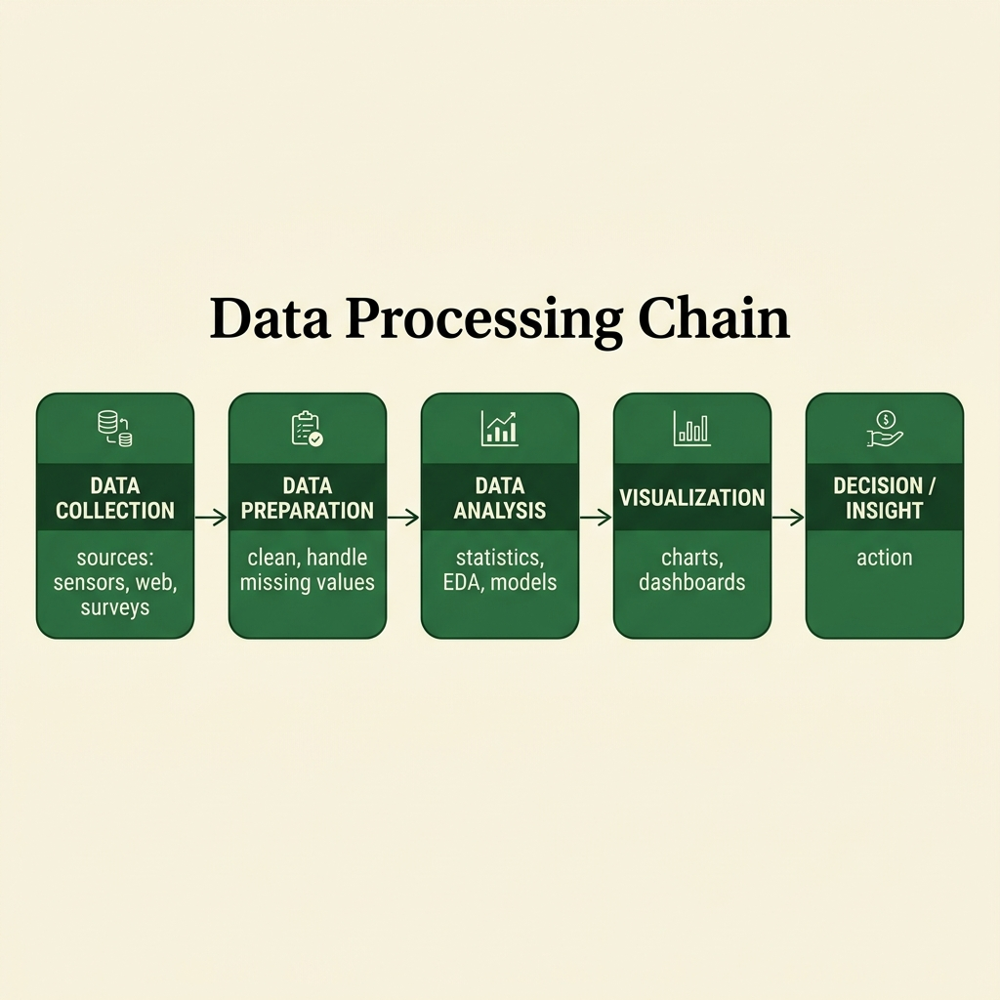
| Type | Question it answers | R / example |
|---|---|---|
| Descriptive | What happened? (summarise the past — hindsight) | summary(sales) → monthly revenue dashboard |
| Diagnostic | Why did it happen? (drill into causes — insight) | cor(spend, churn) → root-cause of a sales drop |
| Predictive | What will happen? (forecast — foresight) | lm(sales ~ ad) / predict() → fraud / demand score |
| Prescriptive | What should we do? (recommend action) | optim() / rules → Amazon next-best-action |
Mnemonic: Dogs Don't Predict Prescriptions — Descriptive, Diagnostic, Predictive, Prescriptive (easy → hard).
summary() = descriptive, cor() = diagnostic, lm()/predict() = predictive, optim()/rules = prescriptive.
Distributions are mathematical functions describing how values of a random variable are spread. Four named in the syllabus:
| Distribution | Type | Formula (PMF/PDF) | Use | R fn |
|---|---|---|---|---|
| Normal | Continuous | f(x)=(1/σ√(2π))·e^(−(x−μ)²/2σ²) | Heights, errors, IQ | dnorm |
| Binomial | Discrete | P(X=k)=ᶜⁿₖ pᵏ(1−p)ⁿ⁻ᵏ | Coin flips, defects | dbinom |
| Poisson | Discrete | P(X=k)=(λᵏe^(−λ))/k! | Calls/hour, rare events | dpois |
| Uniform | Cont./Disc. | f(x)=1/(b−a) | Dice, random sampling | dunif |
Mnemonic: Never Bake Potato Uniformly — Normal, Binomial, Poisson, Uniform.
git).lm(), decision trees) so answers shift from "what happened" to "what will happen".Tasks (CCRAS): Classification (spam/ham) · Clustering (customer segments) · Regression (sales forecast) · Association rules (market basket) · Sequential patterns (clickstream).
| Feature | Database (OLTP) | Data Warehouse (OLAP) |
|---|---|---|
| Purpose | Day-to-day transactions | Analysis & reporting |
| Data | Current, real-time | Historical, aggregated |
| Operations | INSERT · UPDATE · DELETE | SELECT-heavy queries |
| Schema | Normalised (3NF) | Denormalised (Star / Snowflake) |
| Users | Clerks, applications | Analysts, managers |
| Size | MBs to GBs | GBs to PBs |
| Response | Milliseconds | Seconds–minutes |
A Data Warehouse is a subject-oriented, integrated, time-variant, non-volatile collection of data built to support management decision-making (the four properties from W. H. Inmon, the "father of the data warehouse").
A warehouse uses a dimensional schema:
units_sold, revenue) + foreign keyslm() much better after fitting a real housing-price model than after reading its formula.Key feature for DS — elastic on-demand compute:
AWS SageMaker, Google Colab, or Azure ML to run experiments at scale.
lm(), decision tree, SVM.| Domain | DS Application | Technique |
|---|---|---|
| Healthcare | Disease prediction, drug discovery | Classification, DL |
| Finance | Fraud detection, credit scoring | Anomaly det., LR |
| Retail | Recommendation, demand forecast | Collaborative filt. |
| Transport | Route optimisation, ETA | Graph algos |
| Sports | Player analytics, win prediction | Regression |
| Govt | Census analysis, policy modelling | Clustering, surveys |
| Aspect | Supervised | Unsupervised |
|---|---|---|
| Input | Labelled (X, y) | Unlabelled (X only) |
| Goal | Learn f(X) → y; predict on new X | Discover structure / groupings |
| Tasks | Classification, Regression | Clustering, Dimensionality reduction |
| Algorithms | Linear/Logistic Reg, SVM, Decision tree, kNN | K-means, Hierarchical, PCA, DBSCAN |
| Evaluation | Accuracy, RMSE, F1 | Silhouette score, inertia (harder) |
| Example | Spam classifier, house-price prediction | Customer segmentation, anomaly detection |
The language + ecosystem that distributes it. Foundation for Units 3–4.
Foundation · ~10/75 marksKey features:
x + y).Limitations:
cran.r-project.org (Windows / macOS / Linux build).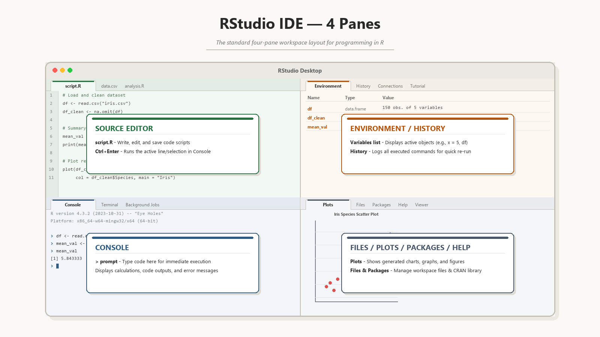
R.version.string in the console.# First program
print("Hello, R!")
cat("R version:", R.version.string, "\n")cran.r-project.org.
# install once from CRAN
install.packages("dplyr")
# load every session before use
library(dplyr) # error if missing
require(dplyr) # FALSE if missing
# package maintenance
update.packages()
remove.packages("dplyr")?mean or help(mean) — function help page??regression — fuzzy search across installed helpexample(plot) — runs inline examplesvignette("dplyr") — long-form tutorial PDFsargs(fn) — list a function's argumentsstr(obj) — structure summary of any objectR prompt basics:
<- preferred, = also works| Value | Meaning | Test |
|---|---|---|
NA | Missing (Not Available) | is.na() |
NULL | Empty / undefined | is.null() |
NaN | Not a Number (0/0) | is.nan() |
Inf | Positive infinity | is.infinite() |
-Inf | Negative infinity | is.infinite() |
TRUE/FALSE | Logical literals (also T/F) | is.logical() |
| Symbol | Meaning | Test function | Example |
|---|---|---|---|
NA | Missing — value should exist but is unknown | is.na(x) | x <- c(1, NA, 3); mean(x, na.rm=TRUE) → 2 |
NaN | Not a Number — undefined numeric (0/0, log of negative) | is.nan(x) (also TRUE for is.na) | 0/0 → NaN · log(-1) → NaN with warning |
NULL | Empty / absent — zero-length object, no slot | is.null(x) | x <- list(a=1); x$b → NULL · df$col <- NULL drops the column |
Inf / -Inf | Positive / negative infinity — overflow or division by 0 | is.infinite(x) · is.finite(x) | 1/0 → Inf · -1/0 → -Inf · log(0) → -Inf |
Trap — how each propagates:
NA: propagates through arithmetic — use na.rm=TRUE to skip itNaN: technically also NA (is.na(NaN) → TRUE) but reverse is NOT trueNULL: length 0, never appears inside a vector — only between objectsInf: participates in arithmetic: Inf + 1 = Inf, 1/Inf = 0NA = "we don't know what this should be" (missing — the box exists, the value is gone).NaN = "this is broken math, like 0÷0" (the computation never had a valid answer).NULL = "nothing was ever here" (no box at all — used to remove a column).Inf = "too big to write" (overflow or division by zero).R has 6 atomic types — everything is an object:
logical — TRUE / FALSEinteger — 5Ldouble (numeric) — 3.14complex — 2+3icharacter — "hello"raw — raw bytes# inspect type
class(3.14) # "numeric"
typeof(3.14) # "double"
class(5L) # "integer"
# convert type
as.integer("42") # 42
as.numeric("3.14") # 3.14
as.character(99) # "99"
c(TRUE, 2L, 3.5, "x") # all become characterc() mixed types together R silently promotes every element up to the most general type present, following the fixed ladder logical → integer → double → complex → character. It never demotes — one string in the mix turns the whole vector into character.
# Watch each result climb the ladder
c(TRUE, FALSE) # logical
c(TRUE, 5L) # integer -> c(1L, 5L) (TRUE counts as 1)
c(TRUE, 2.5) # double -> c(1.0, 2.5)
c(2L, 4.5) # double -> c(2.0, 4.5)
c(3.5, "x") # character-> c("3.5", "x")
# Explicit coercion can FAIL silently -> NA + warning
as.numeric("hello") # NA (with a warning) — not an error
as.integer(3.9) # 3 (truncates toward zero, does NOT round)c() lifts every element to the rightmost type present; the highest type "wins".| Category | Operators | Example |
|---|---|---|
| Arithmetic | + - * / ^ %% %/% | 5 %% 2 = 1 (mod) |
| Relational | == != < > <= >= | 3 != 4 |
| Logical (element-wise) | & | ! | c(T,F) & c(T,T) |
| Logical (short-circuit) | && || | only first element |
| Assignment | <- = -> <<- | x <- 5 |
| Miscellaneous | : %in% %*% | 1:10, x %in% v, matrix mult |
& works element-wise on vectors. && works only on the first element and short-circuits. Use && inside if(), & for vector logic.
1 · Arithmetic & exponential — abs, sqrt, exp, log family
# Arithmetic
abs(-5) # 5
sqrt(16) # 4
exp(1) # 2.718
log(100) # 4.605 (natural log)
log10(100) # 2
log2(8) # 32 · Rounding — ceiling, floor, round, signif
# Rounding
ceiling(2.3) # 3
floor(2.7) # 2
round(2.567, 1) # 2.6
signif(123.45, 3) # 1233 · Trig & aggregation — sin/cos/tan, sum/mean/sd
# Trig
sin(pi/2) # 1
cos(0); tan(pi/4)
# Aggregation
sum(1:10); prod(1:5)
min(x); max(x); range(x)
mean(x); median(x); sd(x); var(x)
length(x)sqrt(16); log(exp(2)); round(2.567, 1)The smallest, most-used object in R. 1-D, homogeneous.
# create vectors
v <- c(1, 2, 3)
seq(1, 5) # 1 2 3 4 5
rep(0, 3) # 0 0 0
# access values
v[2] # second value
v[v > 2] # condition filter
names(v) <- c("a","b","c")
v["b"] # named accessc(1,2,3) + c(10,20) → c(11, 22, 13) with a warning if not a multiple.
1:6 + c(10,20) · the length-2 vector is repeated to fill length 6 before element-wise addition (no warning here — 6 is a multiple of 2).Matrix = 2-D homogeneous (every cell same type). Array = N-D homogeneous.
# matrix: rows and columns
m <- matrix(1:12, nrow=3, ncol=4, byrow=TRUE)
m[2,3] # one cell
m[2, ] # full row
m[ ,3] # full column
dim(m); nrow(m); ncol(m)
t(m) # transpose
m %*% t(m) # matrix productFill order — the byrow argument:
byrow=FALSE: fills column-by-column (top → bottom, col 1 then col 2)byrow=TRUE: fills row-by-row (left → right, row 1 then row 2)1:4 → two completely different layoutsbyrow fill order — same input 1:4, default FALSE walks columns top-to-bottom, TRUE walks rows left-to-right. Cell colours track each number's destination.Worked answer — May-2023 Q6b verbatim: two 3×3 matrices, element-wise * AND matrix product %*% in one program.
# two 3x3 matrices
A <- matrix(1:9, nrow=3, ncol=3)
B <- matrix(c(9,8,7,6,5,4,3,2,1), 3, 3)
# element-wise: same position cells multiply
A * B
# matrix product: row of A x column of B
A %*% BFactor — categorical data as integer codes + level labels:
lm(), aov() use levels to build dummy variablesg <- factor(c("M","F","M","F"), levels=c("M","F"))
levels(g) # "M" "F"
table(g) # frequency count
# Ordered factor — useful in models
o <- factor(c("L","H","M"),
levels=c("L","M","H"), ordered=TRUE)
o[1] < o[2] # TRUE# factor operations
nlevels(g) # number of levels
as.integer(g) # internal codes
levels(g) <- c("Male","Female")
# cut(): numeric marks -> grade factor
marks <- c(45, 72, 88, 55, 91)
grade <- cut(marks, breaks=c(0,50,70,100),
labels=c("Fail","Pass","Distinction"))
table(grade) # frequency per gradeas.numeric(as.character(f)). A direct as.numeric(f) returns the hidden integer level codes (1, 2, 3 …), not the original values — a guaranteed silent bug.
lm(), aov() and ggplot() use levels to build dummy variables, order axis labels, and group computations. An ordered factor additionally lets < > comparisons work (Low < Medium < High), which a plain character vector cannot.
List — most flexible container in R:
L <- list(name="A", marks=c(80,90), pass=TRUE,
sub_list=list(x=1, y=2))
# Three access syntaxes
L$name # "A"
L[[2]] # c(80, 90) — element itself
L["pass"] # sub-list with one element
length(L)
names(L)Worked answer — May-2023 Q2a verbatim: build a list with 4 different element types and label them with names().
# list: vector + text + matrix + function
lst <- list(nums=c(10,20,30),
greet="Hello",
grid=matrix(1:4, nrow=2),
square=function(x) x^2)
names(lst) # item names
lst$nums # vector item
lst$square(5) # function item gives 25Data Frame — workhorse for tabular data:
df <- data.frame(
name=c("A","B","C"),
marks=c(80, 90, 65),
pass=c(TRUE, TRUE, FALSE))
df$marks # column access
df[df$marks > 75, ] # row filter
df[, c("name","marks")] # column subset
str(df); summary(df); head(df); nrow(df)Worked answer — May-2025 Q3a: build a student data frame, then:
ifelse)# create student data frame
students <- data.frame(
name=c("Anu","Bobby","Chitra"),
marks=c(72,85,91),
stringsAsFactors=FALSE)
# add column, filter rows, find mean
students$grade <- ifelse(students$marks >= 60, "Pass", "Fail")
top <- students[students$marks > 80, ]
mean(students$marks)The highest-yield unit. Loops, lists, functions, OOP. Read every line.
⭐ Very high · ~22/75 marksR is functional-first:
# function syntax: name <- function(args) { body }
greet <- function(name="friend") {
paste("Hello", name)
}
greet() # "Hello friend"
greet("Ankit") # "Hello Ankit"
sapply(1:5, function(x) x^2) # anonymous functionFunction features:
return() neededScripts: save as .R, run via source("file.R") or Rscript file.R from shell.
Worked examples — simple square fn + May-2025 Q4 (grade classifier):
# simple function: square
square <- function(x) {
x * x # last expression returns
}
square(7) # 49
# grade classifier
classify <- function(marks) {
if (marks >= 75) "A"
else if (marks >= 60) "B"
else if (marks >= 40) "C"
else "Fail"
}# if / else if / else: one value
x <- 5
if (x > 0) {
print("positive")
} else if (x == 0) {
print("zero")
} else {
print("negative")
}
# vectorised ifelse(): many values
v <- c(-1, 0, 5)
ifelse(v >= 0, "non-neg", "neg")for/while bodies, prefer if; for whole-vector decisions, ifelse().
& |) are element-wise — they line up two vectors and compare position-by-position, returning a logical vector. The double forms (&& ||) are scalar — they look at one value, short-circuit (stop early once the answer is known), and are what you put inside if().
| Operator | Name | Behaviour (one line) | Example → result |
|---|---|---|---|
& | AND (vector) | Element-wise AND over whole vectors; evaluates both sides; returns a logical vector. | c(T,F) & c(T,T) → T F |
&& | AND (scalar) | Scalar, short-circuit: tests only the first element; stops at first FALSE. Length > 1 errors in R ≥ 4.3. | TRUE && FALSE → FALSE |
| | OR (vector) | Element-wise OR over whole vectors; evaluates both sides; returns a logical vector. | c(T,F) | c(F,F) → T F |
|| | OR (scalar) | Scalar, short-circuit: tests only the first element; stops at first TRUE. | FALSE || TRUE → TRUE |
! | NOT | Element-wise negation: flips every TRUE↔FALSE in the vector. | !c(T,F) → F T |
xor() | exclusive OR | Element-wise: TRUE only when the two differ (exactly one is TRUE). | xor(T,T) → FALSE |
isTRUE() | safe single test | NA-safe: TRUE only if argument is a length-1 logical equal to TRUE; NA/non-logical → FALSE. | isTRUE(NA) → FALSE |
isFALSE() | safe single test | NA-safe mirror: TRUE only if argument is a length-1 logical equal to FALSE. | isFALSE(0) → FALSE |
any() | vector reduce | Collapses a logical vector to one value: TRUE if at least one element is TRUE. | any(c(F,F,T)) → TRUE |
all() | vector reduce | Collapses a logical vector to one value: TRUE only if every element is TRUE. | all(c(T,T,F)) → FALSE |
%in% | set membership | Element-wise "is each left value present in the right set?"; returns logical vector, never NA. | 2 %in% c(1,2,3) → TRUE |
NA propagation | unknown logic | NA spreads unless the other operand decides the result: FALSE wins under &, TRUE wins under |. | NA & FALSE → FALSE; NA | TRUE → TRUE |
1 · Element-wise vs scalar short-circuit — & / && behaviour trap
# Element-wise (&) vs scalar short-circuit (&&) — the classic trap
a <- c(TRUE, FALSE, TRUE)
b <- c(TRUE, TRUE, FALSE)
a & b # TRUE FALSE FALSE (compares all 3 positions)
a && b # tests only a[1] & b[1] -> in R >= 4.3 this ERRORS (length > 1)
# Short-circuit avoids the costly / unsafe right side
x <- 0
if (x != 0 && 10 / x > 1) print("safe") # 10/x never runs when x == 02 · NA propagation & reducers — NA & FALSE/TRUE, all(), %in%, xor()
# NA propagation — TRUE/FALSE can override an unknown
NA & FALSE # FALSE (one FALSE forces AND false)
NA & TRUE # NA (still unknown)
NA | TRUE # TRUE (one TRUE forces OR true)
NA | FALSE # NA (still unknown)
# Reducers + membership
all(c(TRUE, TRUE, NA), na.rm = TRUE) # TRUE
2 %in% c(1, 2, 3) # TRUE
xor(TRUE, FALSE) # TRUE&& on a multi-element vector inside if() — only the first element is read (and errors in R ≥ 4.3). Use single & for vectors.if (x == NA) — always yields NA, never TRUE. Use is.na(x), or isTRUE() to fold an NA condition to FALSE.any()/all() to ignore NA — they return NA by default; pass na.rm = TRUE.| Type | When to use | Syntax |
|---|---|---|
| for | Known number of iterations / iterate over a sequence | for (var in seq) { body } |
| while | Repeat until a condition becomes FALSE | while (cond) { body } |
| repeat | Forever — escape only via break | repeat { ...; if (c) break } |
Loop-control keywords: break = exit loop · next = skip to next iteration (Python's continue).
break → body always runs ≥ 1 time.
for bakes init/condition/update into one header; while and repeat need them by hand. Entry-controlled loops can skip the body entirely; the exit-controlled repeat always executes at least once.1 · for / while — entry-controlled loops quick demo
# for: cube of 1..7 (May-2023 Part-A j)
for (i in 1:7) print(i^3)
# while
i <- 1
while (i <= 5) { print(i); i <- i + 1 }2 · repeat & next — exit-controlled loop and skip keyword
# repeat: runs until break
i <- 1
repeat {
if (i > 5) break
print(i)
i <- i + 1
}
# next: skip one round
for (i in 1:5) {
if (i == 3) next
print(i)
}break. Same job, different way of expressing "when do I stop?".
Worked answer — May-2023 Q1j (cubes of 1..7) in all three loop forms:
1 · for loop — May-2023 Q1j verbatim, cubes with output
# for — cube of 1..7 (May-2023 Q1j verbatim)
for (i in 1:7) {
print(i ^ 3)
}
# [1] 1
# [1] 8
# [1] 27
# [1] 64
# [1] 125
# [1] 216
# [1] 3432 · while loop — same task, manual counter
i <- 1
while (i <= 7) {
cat(i ^ 3, " ") # 1 8 27 64 125 216 343
i <- i + 1
}3 · repeat loop — needs explicit break (May-2023 Q1g)
i <- 1
repeat {
cat(i ^ 3, " ")
i <- i + 1
if (i > 7) break # only way out
}
# Output: 1 8 27 64 125 216 343# Replaces long if-else if chains
day <- "mon"
switch(day,
mon = "Start of week",
fri = "TGIF!",
sat = , # falls through
sun = "Weekend",
"Mid-week" # default (no name)
)Behaviour:
sat = ,) fall through to the next non-empty caseWorked answer — May-2023 Q3b verbatim: a calculator using switch() as multi-way dispatch.
# switch(): choose one case by name
calc <- function(op, a, b) {
switch(op,
add = a + b,
sub = a - b,
mul = a * b,
div = a / b,
"Unknown operation")
}
calc("add", 5, 3) # 81 · Create & access — heterogeneous list with 4 element types, 3 access syntaxes
# list can hold mixed data
student <- list(
name = "Ankit", # character
marks = c(80, 90, 75), # numeric vector
subj = matrix(1:6, 2, 3), # matrix
pass = TRUE # logical
)
# access list items
student$name # "Ankit"
student[[2]] # marks vector itself
student["subj"] # sub-list2 · Common operations & recursive list — add/remove/sapply/class; list of lists
# Common operations
length(student) # 4
names(student)
student$grade <- "A" # add
student$marks <- NULL # remove
sapply(student, class) # type of each element
# Recursive (list of lists)
class_list <- list(s1=student, s2=list(name="B"))
class_list$s1$marks[ ]. List = heterogeneous + nestable, 1-D, accessed with [[ ]] for elements and [ ] for sub-lists.
c() of one type that cannot hold another vector inside it).
is.recursive(L) → TRUE for any list; is.recursive(c(1,2,3)) → FALSE for an atomic vector. Mirror: is.atomic() is TRUE for the atomic vector, FALSE for the list.str(L) prints the nested tree with indented $ levels — the fastest way to read how deep a recursive list goes.unlist(L) collapses every nested level into a single atomic vector (and coerces to one common type via the promotion ladder).nested <- list(a = 1,
b = list(x = 2, y = list(z = 3))) # list inside list inside list
is.recursive(nested) # TRUE — a list is a recursive vector
is.recursive(1:3) # FALSE — an atomic vector is flat
is.atomic(nested) # FALSE
nested$b$y$z # 3 — reach into the deepest level
unlist(nested) # a=1, b.x=2, b.y.z=3 — flattened, names joined by "."
str(nested) # shows the indented nesting treepassed pocket above), so a one-line reminder of the shape helps: a function is built as name <- function(args) { body } — the last expression in the body is auto-returned (no explicit return() needed).
area <- function(l, b) { l * b } # last expression is auto-returned
area(4, 3) # 121 · Create & inspect — data.frame(), str/head/summary/dim
df <- data.frame(
name=c("A","B","C","D"),
marks=c(80, 90, 65, 45),
stringsAsFactors=FALSE)
# Inspect
str(df); head(df, 2); summary(df); dim(df)
# Add column
df$grade <- ifelse(df$marks >= 60, "Pass", "Fail")2 · Filter, sort & aggregate — row filter, order(), aggregate()
# Filter rows
df[df$marks > 70, ]
# Sort
df[order(-df$marks), ] # descending
# Aggregate
aggregate(marks ~ grade, data=df, mean)3 · Bind & export — rbind/cbind, write.csv
# Bind
rbind(df, data.frame(name="E", marks=88, grade="Pass"))
cbind(df, bonus=df$marks * 0.1)
# Export
write.csv(df, "students.csv", row.names=FALSE)df <- data.frame(x=1:5, y=c(10,20,30,40,50)), what does df[df$x > 2, "y"] return?lapply() & sapply() — functional alternatives to loops (the two functions named in the syllabus):
for loop| Function | Input | Output | Use case |
|---|---|---|---|
lapply(X, FN) | list / vector | list (always) | element-wise, preserve structure |
sapply(X, FN) | list / vector | vector (simplified) | cleaner lapply when output is uniform |
# lapply — same input, list output
lapply(1:3, sqrt)
# [[1]] 1 [[2]] 1.414 [[3]] 1.732
# sapply — same input, vector output
sapply(1:3, sqrt)
# 1.000 1.414 1.732for loop for the same task. Encourages declarative ("apply this to each") over imperative thinking.
lapply hands the results back as a list, sapply flattens them into a clean vector when every result is the same shape.
R supports three OOP systems. Each defines classes & method dispatch differently.
# S3: object + class label
x <- list(name="A", marks=85)
class(x) <- "Student"
# method name pattern: generic.class
print.Student <- function(o, ...) {
cat("Student:", o$name, "Marks:", o$marks, "\n")
}
print(x) # calls print.Student()setClass("Student",
representation(name="character", marks="numeric"))
s <- new("Student", name="A", marks=85)
s@name; s@marks # @ slot access
# S4 method
setGeneric("greet", function(x) standardGeneric("greet"))
setMethod("greet", "Student",
function(x) cat("Hi", x@name))
greet(s) # "Hi A"
validObject(s) # checks slot typesAccount <- setRefClass("Account",
fields = list(balance = "numeric"),
methods = list(
deposit = function(x) { balance <<- balance + x },
withdraw = function(x) { balance <<- balance - x }
))
a <- Account$new(balance=100)
a$deposit(50); a$balance # 150 — MUTATED in-place| Feature | S3 | S4 | Reference (R5) |
|---|---|---|---|
| Formality | Informal | Formal | Formal |
| Class definition | class(x)<-"X" | setClass() | setRefClass() |
| Slot access | $ | @ | $ |
| Type validation | None | Built-in | Built-in |
| Mutability | Copy-on-modify | Copy-on-modify | Mutable (<<-) |
| Dispatch | Name lookup fn.cls | setMethod() | Method inside class |
| Speed | Fastest | Slower (validation) | Slowest |
| Used in | Most base R + tidyverse | Bioconductor, Matrix | R6 packages, Shiny |
print.MyClass() and R finds it automatically. No type checks.@.obj$x <- val inside a method actually changes the original object instead of a copy. Closest thing R has to Java/Python classes.Read in, debug, summarise, plot. Distribution & hypothesis-testing territory.
⭐ Very high · ~22/75 marks# one object: best exam example
saveRDS(df, "students.rds")
df2 <- readRDS("students.rds")
# many objects: workspace file
save(df, model, file="session.RData")
load("session.RData") # restores names
ls() # list objects# read CSV into data frame
df <- read.csv("students.csv", header=TRUE,
stringsAsFactors=FALSE)
# write CSV without extra row-number column
write.csv(df, "out.csv", row.names=FALSE)
# tab-separated file
tsv <- read.table("file.tsv", sep="\t", header=TRUE)Worked answer — May-2023 Q5b verbatim: Jon/Bill/Maria/Tom/Emma dataset, export to CSV, read back, verify.
# create small data frame
people <- data.frame(
name=c("Jon","Bill","Maria"),
age=c(23,41,32),
stringsAsFactors=FALSE)
# write and read CSV
write.csv(people, "people.csv", row.names=FALSE)
people2 <- read.csv("people.csv",
stringsAsFactors=FALSE)
head(people2)ODBC (Open Database Connectivity) is a standard API that lets R read/write external databases (SQL Server, MySQL, Oracle, Postgres, MS Access).
library(RODBC)
# connect using DSN, read, write, close
con <- odbcConnect("dsn_name", uid="user", pwd="pass")
students <- sqlQuery(con,
"SELECT * FROM students WHERE marks > 60")
sqlSave(con, df, tablename="new_students")
odbcClose(con)Modern alternative — DBI + odbc:
library(DBI); library(odbc) then dbConnect(odbc(), Driver="MySQL", ...)sqlFetch()/sqlQuery(), transform in R, write back with sqlSave().RODBC is the older, exam-standard package; DBI + odbc is the modern type-safe alternative. Both follow connect → query → disconnect.| Step | Function | Purpose |
|---|---|---|
| 1 · Connect | odbcConnect(dsn, uid, pwd) | Open channel to the database using the system DSN name |
| 2 · Read | sqlQuery(con, sql) / sqlFetch(con, table) | Run any SELECT → returns a data frame |
| 3 · Write | sqlSave(con, df, tablename) | Bulk-write a data frame as a new/existing table |
| 4 · Close | odbcClose(con) | Release the connection and free server resources |
library(RODBC)
# connect -> query -> save -> close
con <- odbcConnect("myDB", uid="admin", pwd="secret")
df <- sqlQuery(con,
"SELECT name, marks FROM students WHERE marks > 60")
sqlSave(con, df, tablename="top_students",
rownames=FALSE)
odbcClose(con) # always close connection| Tool | Purpose | Usage |
|---|---|---|
traceback() | Print call stack after an error | traceback() after error |
debug(fn) | Single-step through a function | debug(fn); fn(args) |
undebug(fn) | Remove debug flag | undebug(fn) |
browser() | Inline breakpoint inside code | ... ; browser(); ... |
tryCatch() | Graceful error handling | tryCatch(expr, error=function(e) ...) |
warning() · stop() · message() | Signal issues at varying severity | raise from within functions |
| RStudio breakpoints | Click in left gutter | graphical equivalent of browser() |
# browser(): pause inside function
sumPositive <- function(v) {
total <- 0
for (x in v) {
if (x < 0) browser() # inspect x, total
total <- total + x
}
total
}traceback() = "where did the error come from?" — prints the call stack after a crash.debug(fn) = "step through this function line-by-line" — pauses on every line.browser() = "pause HERE and let me poke around" — drop it in your own code as a breakpoint.tryCatch() = "try this, but don't crash if it fails" — graceful error handling for production.x <- rnorm(100, mean=50, sd=10)
hist(x, main="Hist", col="lightgreen", breaks=10)
plot(x, type="l", col="red", pch=16,
xlab="i", ylab="value")
boxplot(x ~ group, data=df)
barplot(table(df$grade))Key base-graphics attributes:
col — colour of points / lines / barspch — point character: 1 = circle, 16 = filled circle, 4 = crosstype — plot type: "p" points · "l" line · "b" bothlty — line type (solid / dashed / dotted)lwd — line width (numeric, default 1)library(ggplot2)
# histogram: one numeric column
ggplot(df, aes(x = marks)) +
geom_histogram(binwidth = 5) +
labs(title="Marks distribution",
x="Marks", y="Frequency")| Aspect | Base Graphics | ggplot2 |
|---|---|---|
| Paradigm | Imperative (draw) | Declarative (grammar of graphics) |
| Syntax | plot() + lines() + points() | ggplot() + geom_*() + ... |
| Composition | Functions called sequentially on a canvas | Layers added with + |
| Aesthetics | Per-call parameters | aes() — separate from geoms |
| Themes | Hand-tune par() | theme_minimal(), theme_bw()… |
| Faceting | Manual par(mfrow=) | One line: facet_wrap(~var) |
| Speed | Faster | Slower but more flexible |
+; swap any layer to reshape the plot.plot → lines → points → legend); ggplot2 = declarative layers (data + aes + geom + theme) glued with +, each independently swappable.ggplot() is the foundation: every layer above derives its values from these columns. One plot can refer to a single data frame or layer-specific overrides. Example: ggplot(data = students) binds the students data frame to the plot.aes()) — the mapping from data columns to visual channels (x, y, colour, fill, size, shape, alpha). Aesthetics describe what variable controls what visual, never raw values. Example: aes(x = hours, y = marks, colour = grade) maps three columns to three channels.geom_*) — the visual marks drawn for each row: points, bars, lines, boxplots, polygons. Geometries consume aesthetics and emit shapes; multiple geoms can stack on the same aesthetic mapping. Example: geom_point(size = 3) draws a scatter, geom_bar(stat = "count") draws bars.stat_*) — optional transformations applied before drawing: smoothing, binning, density estimation, summary statistics. Every geom has a default stat (e.g. geom_bar uses stat_count); explicit stats let you overlay fits or summaries. Example: stat_smooth(method = "lm") overlays a linear-regression line with confidence band.facet_*) — split the plot into small multiples by one or two categorical variables, so subgroups can be compared side-by-side without overlapping. Replaces base-R's manual par(mfrow=). Example: facet_wrap(~ grade) creates one panel per grade; facet_grid(sex ~ year) builds a 2-D matrix.theme_*) — non-data styling: fonts, gridlines, panel background, legend position, axis ticks. Themes never change the data or its mapping, only the presentation. Example: theme_minimal() strips chartjunk for publication; theme(legend.position = "bottom") tweaks one element.Compose order:
+ operator: ggplot(df, aes(x, y)) + geom_point() + stat_smooth() + facet_wrap(~g) + theme_minimal()+. Slower to render, but much easier to change later — just swap one layer instead of redrawing.
Worked answer — May-2024 Q4a (scatter+histogram, 10M) + May-2025 Q6b (bar chart, 5M):
library(ggplot2)
# question asks one clean scatter plot
df <- data.frame(hours=c(2,4,6,8),
marks=c(45,60,72,88))
ggplot(df, aes(x=hours, y=marks)) +
geom_point(colour="#166534", size=3) +
labs(title="Study hours vs marks",
x="Hours", y="Marks")| Geom | Shows | Data needed |
|---|---|---|
geom_point() | Scatter — relationship of two numerics | x num, y num |
geom_line() | Trend over an ordered axis (time series) | x ordered, y num |
geom_bar() | Counts per category (auto-tallies rows) | x categorical |
geom_col() | Bar of pre-computed values (no tally) | x cat, y num |
geom_histogram() | Distribution of one numeric (bins) | x num |
geom_boxplot() | Five-number summary per group | x cat, y num |
geom_smooth() | Fitted trend + confidence band | x num, y num |
# mapped colour: column -> legend
ggplot(df, aes(x=hours, y=marks, colour=grade)) +
geom_point()
# fixed colour: outside aes(), no legend
ggplot(df, aes(x=hours, y=marks)) +
geom_point(colour="darkgreen")aes() — e.g. aes(colour = "blue") — does not paint points blue; it creates a one-level factor called "blue" and lets ggplot pick its own (usually red) colour plus a legend. To set a constant colour, place it outside aes() in the geom: geom_point(colour = "blue").
x <- c(12, 5, 8, 3, 19, 7, 5, 8)
# extremes and positions
max(x); min(x); range(x)
which.max(x); which.min(x)
# frequency table and bins
table(x)
cut(x, breaks=c(0,5,10,20))Frequency distribution — what it tells you:
table(x) for exact counts; cut(x, breaks=...) to bin into custom intervalshist(x, plot = FALSE)$counts returns the bin counts as a numeric vectorCentral tendency — key points:
| Measure | Formula | Best when | R |
|---|---|---|---|
| Mean (x̄) | Σx / n | Symmetric data, no outliers | mean(x) |
| Median | middle value (sorted) | Skewed data, outliers present | median(x) |
| Mode | most frequent value | Categorical / nominal data | UDF (see below) |
| Variance (σ²) | Σ(x − x̄)² / (n−1) | Spread measure | var(x) |
| SD (σ) | √variance | Spread in original units | sd(x) |
| Range | max − min | Quick spread | diff(range(x)) |
| Quartiles / IQR | Q3 − Q1 | Robust spread | IQR(x) |
# sample data
x <- c(2, 4, 4, 4, 5, 5, 7, 9)
# central tendency + spread
mean(x); median(x)
var(x); sd(x)
summary(x) # Min Q1 Median Mean Q3 Max
# mode: most frequent value
names(which.max(table(x)))Compute mean, median, mode, SD for: 2, 4, 4, 4, 5, 5, 7, 9
Mean=5 · Median=4.5 · Mode=4 (frequency 3) · SD≈2.14
For x = c(2, 4, 4, 4, 5, 5, 7, 9), compute variance step-by-step.
mean=5 · deviations²: 9, 1, 1, 1, 0, 0, 4, 16 → sum=32 · R uses n−1 → var = 32/7 ≈ 4.571 (so var(x) = 4.571, sd ≈ 2.138)
| Test | Use when | R |
|---|---|---|
| One-sample t-test | Compare sample mean to a known value (n < 30) | t.test(x, mu=50) |
| Two-sample t-test | Compare means of two groups | t.test(x, y) |
| Paired t-test | Before/after measurements | t.test(x, y, paired=TRUE) |
| Z-test | n ≥ 30 and σ known | BSDA::z.test() |
| Chi-square | Test independence / fit | chisq.test(tbl) |
| ANOVA | Compare 3+ group means | aov(y ~ group) |
| Correlation test | Test if r ≠ 0 | cor.test(x, y) |
Picking the right test — a decision tree: the choice flows from what kind of data you have and what question you are asking.
chisq.test, comparing means → t.test / ANOVA, numeric relationship → cor.test.# Worked example: is mean weight = 50 kg?
weights <- c(48, 52, 49, 51, 53, 47, 50, 51, 49, 52)
t.test(weights, mu = 50)
# t = 0.327, df = 9, p-value = 0.751
# 95% CI: [48.8, 51.6]
# Since p > 0.05 → fail to reject H₀
# Conclusion: insufficient evidence to claim mean ≠ 50.Worked answer — May-2024 Q5b verbatim: one-sample t-test, claim "class mean = 70", α = 0.05.
# H0: mean = 70, H1: mean != 70
scores <- c(68,72,75,69,71,66,74,73,70,67)
# one-sample t-test
ans <- t.test(scores, mu=70)
ans$p.value
# if p > 0.05: fail to reject H0t.test(x, mu=50, alternative="greater") or "less"| Decision \ Reality | H₀ is TRUE | H₀ is FALSE |
|---|---|---|
| Reject H₀ | Type I error (α) — false positive | Correct (power = 1 − β) |
| Fail to reject H₀ | Correct decision | Type II error (β) — false negative |
p < α; for a mean-difference test, a CI that excludes the null value corroborates rejection.
x <- c(1, 2, 3, 4, 5)
y <- c(2, 4, 5, 4, 5)
cor(x, y) # 0.775 (Pearson)
cor(x, y, method="spearman") # rank-based
cor.test(x, y) # also reports p-value
cov(x, y) # 1.5 (covariance)Worked answer — May-2024 Q1d/h verbatim: compute cor, cor.test, and verify cor = cov ÷ (sd·sd).
# relation between study hours and marks
hours <- c(2,3,4,5,6,7,8)
marks <- c(45,55,60,70,72,80,88)
cor(hours, marks) # Pearson r
cor.test(hours, marks) # r + p-value
# p < 0.05 means correlation is significantR provides a 4-letter naming convention for every standard distribution:
| Prefix | Returns | Use |
|---|---|---|
d | Density (PDF/PMF) | height of curve at x |
p | Cumulative probability (CDF) | P(X ≤ x) |
q | Quantile (inverse CDF) | x such that P(X ≤ x) = p |
r | Random sample | generate n random values |
| Distribution | Mean | Variance | R suffix |
|---|---|---|---|
| Normal(μ, σ²) | μ | σ² | norm |
| Binomial(n, p) | np | np(1−p) | binom |
| Poisson(λ) | λ | λ | pois |
| Uniform(a, b) | (a+b)/2 | (b−a)²/12 | unif |
| Exponential(λ) | 1/λ | 1/λ² | exp |
| Chi-square(k) | k | 2k | chisq |
| Student's t(ν) | 0 | ν/(ν−2) | t |
# normal: d, p, q, r family
dnorm(0, mean=0, sd=1) # density at x
pnorm(1.96) # P(X <= 1.96)
qnorm(0.975) # inverse CDF
rnorm(5, mean=50, sd=10) # random values
# other distributions use same idea
dbinom(3, size=5, prob=0.5) # exact binomial
dpois(2, lambda=3) # exact PoissonMnemonic for 4 prefixes: "density · probability · quantile · random" — d·p·q·r in alphabetical order.
d/p/q/r + the short name (norm, binom, pois, unif).
d = the height of the curve at a point (density / probability mass).p = the area under the curve up to a point (cumulative probability P(X ≤ x)).q = the reverse of p — give me the cutoff for a given probability.r = give me random samples from this distribution.dnorm=height, pnorm=area, qnorm=reverse-area, rnorm=random — repeat that for every distribution.
Worked answer — May-2023 Q4b (4 normal fns) + May-2024 Q4b (binomial fit):
# The four faces of the normal distribution (May-2023 Q4b verbatim)
dnorm(0, mean = 0, sd = 1)
# [1] 0.3989 — PDF value at x = 0 (the peak of the standard normal)
pnorm(1.96, mean = 0, sd = 1)
# [1] 0.975 — P(X <= 1.96) for the standard normal
qnorm(0.975, mean = 0, sd = 1)
# [1] 1.96 — inverse of pnorm: x such that P(X <= x) = 0.975
set.seed(1)
rnorm(5, mean = 50, sd = 10)
# [1] 43.7 51.8 41.6 66.0 53.3 — 5 random samples
# ---- Binomial goodness-of-fit (May-2024 Q4b verbatim) ----
# Observed: x = 0..5; freq = 2, 16, 28, 12, 9, 3 ; N = 70 families of n = 5
x <- 0:5
f <- c(2, 16, 28, 12, 9, 3)
N <- sum(f) # 70
n <- 5
mean_obs <- sum(x * f) / N # 2.271
p_hat <- mean_obs / n # 0.454 — estimated success prob
expected <- N * dbinom(x, size = n, prob = p_hat)
round(expected, 1)
# [1] 3.4 14.1 23.5 19.5 8.1 1.4
# Compare with observed (2 16 28 12 9 3) — fit roughly right, tail too thin.Full paper analysis below, then the calibrated model paper — Part-A (10 × 1.5 = 15 M) + Part-B (any 4 × 15 = 60 M). Every question is ranked by how often it has appeared, BCA-DS papers weighted highest; the ⟲ chip on each card cites the past papers (repetition) it is drawn from.
Paper format (from the PDF note): 7 questions · Part-I = Q1 compulsory, 10 short parts covering the whole syllabus (15 M) · Part-II = 6 questions, 1½ per unit, 15 M each — attempt any 4.
| Topic | Kahan aaya | Baar | Marks |
|---|---|---|---|
| Measures of central tendency (mean / median / mode) | May-23 Q7(b) | May-24 Q7(b) | May-25 Q5(b) | 3× | 7.5 · 5 · 10M |
| Hypothesis testing — steps, types, t-test | May-23 Q4(a) | May-24 Q5(b) | May-25 Q6(a) | 3× | 8 · 7 · 10M |
| Lists & Data Frames — create, operations, CSV export | May-23 Q2(a)+Q5(b) | May-24 Q3(a) | May-25 Q3(a) | 3× | 6+10 · 5 · 5M |
| Statistical distributions — Normal (d/p/q/r), Binomial, Poisson | May-23 Q4(b) | May-24 Q5(a)+Q6(a)+Q4(b) | May-25 Q7(c) | 3× | 5 · 8+10+5 · 5M |
| lapply() / sapply() functions | May-23 Q1(h) | May-24 Q1(i) | May-25 Q7(b) | 3× | 1.5 · 1.5 · 5M |
| Correlation function & cor.test() | May-23 Q4(c) | May-24 Q1(d) | May-25 Q1(i) | 3× | 2 · 1.5 · 1.5M |
| ggplot2 / base graphics — scatter, histogram | May-23 Q5(a) | May-24 Q4(a) | May-25 Q6(b) | 3× | 5 · 10 · 5M |
| Loops (for/while/repeat) + switch + if-else | May-23 Q3(a)+Q3(b) | May-25 Q4 | 3× | 7+8 · 15M |
| OOP in R — S3 / S4 / Reference classes | May-23 Q6(a) | May-25 Q3(b) | 2× | 7.5 · 10M |
| CSV read / write process | May-23 Q5(b) | May-24 Q3(b) | 2× | 10 · 10M |
| Data types in R (atomic + structures) | May-23 Q1(c) | May-24 Q2(a)+Q2(b) | 2× | 1.5 · 10+5M |
| Debugging techniques in R | May-23 Q7(a) | May-25 Q5(a) | 2× | 7.5 · 5M |
| Math functions / type conversion / vectors | May-23 Q1(a) | May-24 Q1(b)(e)(f) | 2× | 1.5 eachM |
| Matrix creation + element-wise & %*% multiplication | May-23 Q6(b)+Q1(i) | 1× | 7.5 + 1.5M |
| Data Science intro / DB vs DW / supervised vs unsupervised | May-25 Q2(a)+Q2(b)+Q7(a) | 1× gold | 5 + 10 + 5M |
| Parameter | lapply() | sapply() |
|---|---|---|
| Returns | always a list | simplified vector / matrix when possible |
| Use when | results differ in length / type | results are uniform scalars |
| Example | lapply(1:3, sqrt) → list of 3 | sapply(1:3, sqrt) → vector |
sapply is a user-friendly wrapper around lapply that simplifies the output.
cor(x, y) — returns the Pearson correlation coefficient r (range −1 to +1).cor(x, y, method = "pearson") · also "spearman" or "kendall".cor(df) returns the full correlation matrix.sqrt(x) — square root, e.g. sqrt(16) returns 4.abs(x) — absolute value, e.g. abs(-7) returns 7.log(x) — natural logarithm (base e); log(x, base=10) gives log₁₀. Also exp(), round(), ceiling(), factorial().R has five atomic data types:
3.145L (the L suffix)"data"TRUE / FALSE2+3iCheck a value's type with class(x) or typeof(x).
install.packages("ggplot2") (downloads from the repository).library(ggplot2).install.packages() pulls from by default.switch() selects one of several branches by matching an expression against named cases — a clean alternative to a long if-else chain.
switch(EXPR,
case1 = result1,
case2 = result2,
default_result)
day <- "Mon"
switch(day, Mon = "Work", Sun = "Rest") # "Work"for (variable in sequence) {
# body
}
for (i in 1:5) {
print(i^2) # 1 4 9 16 25
}The loop variable i takes each value of the sequence in turn; 1:5 generates c(1,2,3,4,5).
library(ggplot2)
ggplot(data = df, aes(x = height, y = weight)) +
geom_point()ggplot(data, aes(...)) sets the data and the aesthetic mappings (which columns map to x / y).+: geom_point() (scatter), geom_line(), geom_bar(), geom_histogram().lm(y ~ x, data=df) in R).cor(x, y) computes the degree of linear association between two numeric vectors, returning a value in [−1, +1].cor() near 1 implies a strong upward linear trend.| Parameter | Covariance | Correlation |
|---|---|---|
| Definition | Measures joint variability of two variables | Normalised covariance — measures linear association strength |
| Range | −∞ to +∞ (unit-dependent) | −1 to +1 (dimensionless) |
| Example | cov(x, y) | cor(x, y) |
Pearson's coefficient r = Cov(X,Y) / (σX · σY). Value close to +1 or −1 indicates strong linear relationship; near 0 indicates no linear relationship.
t.test(x, mu = 50) (one-sample) or t.test(x, y) (two-sample). The output gives the p-value; reject H₀ if p < 0.05.| Parameter | Vector | List |
|---|---|---|
| Element type | Homogeneous (all same type) | Heterogeneous (mixed types) |
| Created with | c(1, 2, 3) | list(1, "a", TRUE) |
| Indexing | v[2] | l[[2]] (double bracket) |
| Use | numeric / single-type data | nested / mixed structures |
table(x) — counts each distinct value.cut() then tabulate: table(cut(x, breaks = 5)).barplot(table(x)) or hist(x).marks <- c("A","B","A","C","A","B")
table(marks) # A:3 B:2 C:1as.numeric(), as.integer(), as.character(), as.logical(), as.complex().as.numeric("3.14") converts string "3.14" to a numeric value; as.logical(0) returns FALSE.c(1L, 2.5), the integer is silently promoted to double. Check the result type with class().if / else if / else executes a block based on a logical condition.for (fixed sequence), while (condition-driven), repeat (infinite until break).break exits a loop immediately; next skips to the next iteration (equivalent to continue in other languages).+ - * / ^ %% %/% (modulo, integer-division). Example: 7 %% 3 = 1.== != < > <= >= — compare values and return TRUE / FALSE.& | ! && ||; Assignment — <- (preferred) or =; Pipe — |> (base R 4.1+) or %>% (magrittr).mean(x) — computes the arithmetic mean of a numeric vector. Example: mean(c(10, 20, 30)) returns 20. Accepts na.rm = TRUE to ignore NAs.paste() — concatenates strings with a separator. paste("BCA", "DS", sep="-") returns "BCA-DS"; paste0() uses no separator by default.dnorm(x, mean, sd) (PDF), pnorm() (CDF), qnorm() (quantile), rnorm(n) (random samples).repeat creates an infinite loop; use break to exit when a condition is met.
i <- 1
repeat {
print(i)
i <- i + 1
if (i > 5) break
} # prints 1 2 3 4 5matrix(data, nrow, ncol, byrow = FALSE). By default R fills column-wise; set byrow = TRUE to fill row-wise.matrix(1:6, nrow=2, ncol=3) creates a 2×3 matrix. Access element with m[row, col]; whole row: m[1, ].hist(x, breaks = 10); with ggplot2: geom_histogram(bins = 20).df[, 2] or df[[2]] or by name df$colname.cbind(df1, df2) joins two data frames side-by-side (they must have the same number of rows).rbind(df1, df2) stacks rows; both base-R functions require matching dimensions on the joining axis.Explain measures of dispersion (range, variance, SD, IQR) along with measures of central tendency. Apply all on a real dataset in R.
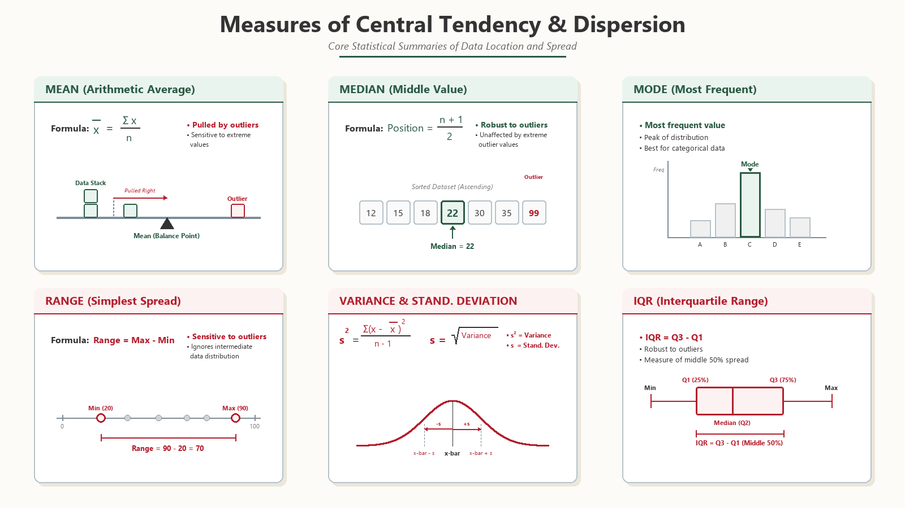
Central tendency (where the centre sits):
mean(x)median(x)u[which.max(tabulate(match(x,u)))]Dispersion (how wide the spread is):
diff(range(x))var(x)sd(x)IQR(x)x <- c(2, 4, 4, 4, 5, 5, 7, 9)
# Tendency
mean(x); median(x) # 5, 4.5
# Dispersion
diff(range(x)) # 7
var(x); sd(x); IQR(x) # 4.571, 2.138, 1.5
sd(x) / mean(x) # 0.43 = CV
summary(x) # 5-number summaryInterpretation: tendency tells you "where the centre is", dispersion tells you "how spread out the data is". Together they characterise a distribution at first glance.
| Parameter | Central tendency | Dispersion |
|---|---|---|
| What it answers | Where is the centre of the data? | How spread out is the data? |
| Measures | Mean, median, mode | Range, variance, SD, IQR, CV |
| Core formula | Mean = Σx/n | Variance = Σ(x − x̄)²/(n−1) |
| R function | mean() · median() | var() · sd() · IQR() |
| Units | Same units as x | SD same as x; variance = x²; CV unit-free |
| Robust to outliers? | Median yes; mean no | IQR yes; range & SD no |
| On the sample | mean = 5, median = 4.5 | range = 7, var = 4.571, sd = 2.138, IQR = 1.5 |
| Pairs with | Mean ↔ SD; median ↔ IQR | SD ↔ mean; IQR ↔ median |
max(x) - min(x); cheapest dispersion, but defined by the two extreme values — fragile to outliers.var(x). Penalises large deviations quadratically. Units = (unit of x)².sd(x). Same units as x; the standard companion to the mean.IQR(x). Robust to outliers — the workhorse spread for skewed data; paired with median.Write an R program to create a data frame of employees (name, dept, salary, joining_year). Perform: add a "bonus" column equal to 10% of salary; filter employees in "IT" with salary > 50000; export to CSV; read it back and verify.
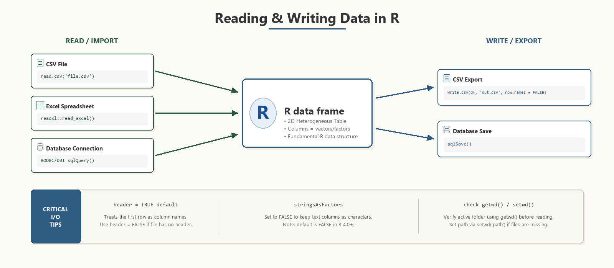
1 · Data frame — create employee table with 6 rows, 4 columns
emp <- data.frame(
name = c("Ankit","Bina","Chetan","Disha","Eshan","Fai"),
dept = c("IT","HR","IT","Finance","IT","HR"),
salary = c(60000, 45000, 52000, 70000, 48000, 55000),
joining_year= c(2019, 2020, 2021, 2018, 2022, 2020),
stringsAsFactors = FALSE
)2 · Bonus column + filter — add computed column, then subset IT dept with salary > 50000
# 1. Bonus column
emp$bonus <- emp$salary * 0.10
# 2. Filter: IT dept AND salary > 50000
it_high <- emp[emp$dept == "IT" & emp$salary > 50000, ]
print(it_high) # Ankit, Chetan3 · CSV export / re-read + aggregate — write to file, read back, verify, compute dept-wise mean
# 3. Export
write.csv(emp, "employees.csv", row.names = FALSE)
# 4. Re-read
emp2 <- read.csv("employees.csv", stringsAsFactors = FALSE)
identical(emp, emp2) # TRUE
# 5. Aggregate — dept-wise mean salary
aggregate(salary ~ dept, data = emp, mean)stringsAsFactors=FALSE — keeps character columns clean.df$bonus <- df$salary * 0.10 — vectorised, no loop required.& (element-wise): df[df$dept=="IT" & df$salary > 50000, ] — note the trailing comma to keep all columns.write.csv(df, ..., row.names=FALSE) then read.csv(..., stringsAsFactors=FALSE); verify with identical().aggregate(salary ~ dept, data=df, mean) yields one row per department — clean formula interface.Compare S3, S4 and Reference Classes (R5) in R. Build a "Bank Account" example in all three systems.
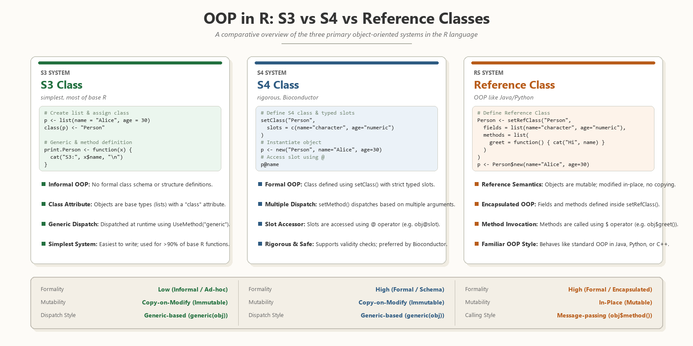
| Feature | S3 | S4 | Reference (R5) |
|---|---|---|---|
| Formality | Informal | Formal | Formal |
| Class definition | class(x)<-"X" | setClass() | setRefClass() |
| Slot access | $ | @ | $ |
| Type validation | None | Built-in | Built-in |
| Mutability | Copy-on-modify | Copy-on-modify | Mutable (<<-) |
| Dispatch | Name lookup fn.cls | setMethod() | Method inside class |
| Speed | Fastest | Slower (validation) | Slowest |
| Used in | Base R + tidyverse | Bioconductor, Matrix | R6 packages, Shiny |
Implementing the same class in all three systems shows that S3 is informal and copy-on-modify, S4 enforces typed slots, and R5 alone supports true mutation via <<-:
# --- S3 (immutable) ---
deposit_s3 <- function(acc, x) { acc$bal <- acc$bal + x; acc }
acc1 <- structure(list(bal=100), class="acc")
acc1 <- deposit_s3(acc1, 50) # must reassign
# --- S4 (slot-validated, still copy-on-modify) ---
setClass("Acc", representation(bal="numeric"))
acc2 <- new("Acc", bal=100)
acc2@bal <- acc2@bal + 50 # creates a copy in fn scope
# --- Reference Class (mutable in place) ---
Acc <- setRefClass("Acc",
fields=list(bal="numeric"),
methods=list(deposit=function(x) bal <<- bal + x))
acc3 <- Acc$new(bal=100)
acc3$deposit(50); acc3$bal # 150 — mutatedclass<-"acc"; mutation requires reassigning the whole object — copy-on-modify.setClass("Acc", representation(bal="numeric")); slot-validated at construction; still copy-on-modify.setRefClass with fields and methods; only R5 supports <<- mutation persisting across method calls.fn.class by name; S4 / R5 use formal generics — S4 enforces argument types at registration.Explain the grammar of graphics. Describe the layers of a ggplot2 plot and build a complete chart with R code.
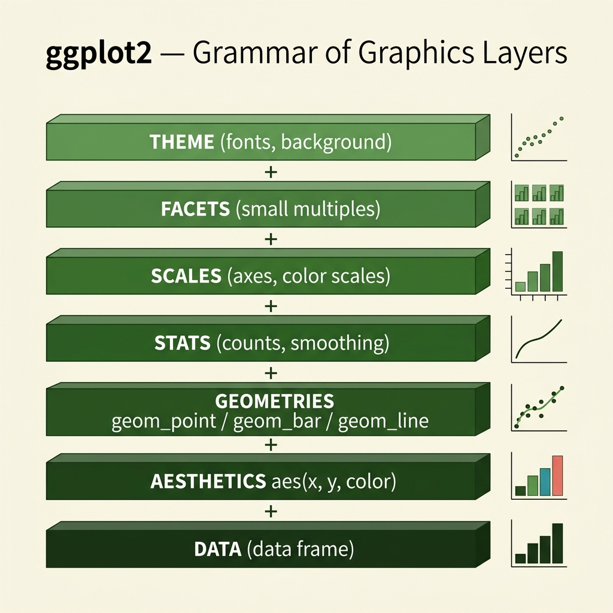
The grammar of graphics (Wilkinson, popularised by ggplot2) treats every statistical plot as a stack of independent layers combined with the + operator. Instead of one monolithic plotting call, you declare the data, map columns to visual channels, then add geometric marks and optional refinements (see the layer stack in Fig P8.1 below).
ggplot(data = df).aes() maps columns to channels (x, y, colour, fill, size, shape).geom_*() draws the marks (points, bars, lines, boxes). Mandatory trio: Data + Aes + Geom.stat_*() transforms (binning, smoothing, density).facet_wrap() / facet_grid() split into small multiples.theme_*() styles non-data ink (fonts, gridlines, legend).library(ggplot2)
# Complete plot — all six layers visible
ggplot(data = mpg, aes(x = displ, y = hwy, colour = drv)) + # 1 data + 2 aes
geom_point(size = 2, alpha = 0.7) + # 3 geometry
geom_smooth(method = "lm", se = FALSE) + # 4 statistic (lm fit)
facet_wrap(~ drv) + # 5 facets
labs(title = "Engine size vs highway mpg",
x = "Displacement (L)", y = "Highway mpg") +
theme_minimal() # 6 theme+.+: a plot is composed, not drawn in one call — swap any layer to reshape the chart.aes() maps columns to channels (x, y, colour, fill, size, shape) — never raw values.aes() (gets a legend); a fixed colour goes outside in the geom.par(mfrow=) with one line: facet_wrap(~ var) builds small multiples.Compare vector, list, matrix and data frame in R. Give the creation syntax and one access example for each, and state when to use which.
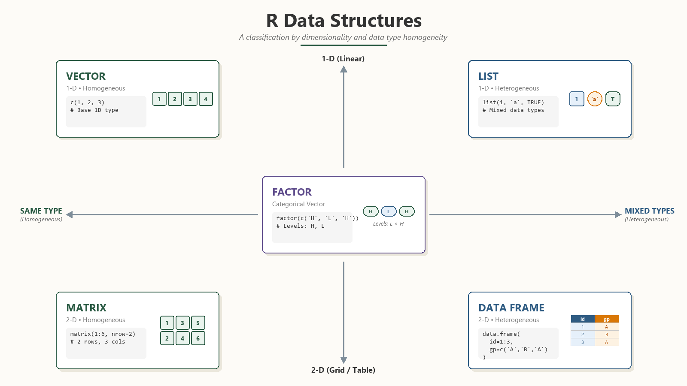
R's four core containers differ on two axes:
| Structure | Dim | Types | Create | When to use |
|---|---|---|---|---|
| Vector | 1-D | Homogeneous | c(1,2,3) | A single column of same-type values |
| List | 1-D | Heterogeneous | list(a=1, b="x") | Mixed / nested data; function returns |
| Matrix | 2-D | Homogeneous | matrix(1:6, 2, 3) | Numeric tables, linear algebra |
| Data frame | 2-D | Heterogeneous | data.frame(...) | Tabular datasets (rows = observations) |
# 1. Vector
v <- c(10, 20, 30); v[2] # 20
# 2. List
L <- list(name="Ankit", marks=c(80,90))
L$marks # 80 90
# 3. Matrix — fills column-wise
m <- matrix(1:6, nrow=2)
m[1, 3] # 5
# 4. Data frame
df <- data.frame(name=c("A","B"), marks=c(80,90))
df$marks # 80 90
df[df$marks > 85, ] # row filter → "B" row[[ ]] or $, sub-lists with [ ].m[row, col].Differentiate between base graphics and ggplot2 graphics. What do col and pch attributes represent? Write about scatter plot and histograms with examples and explain their importance.
R ships with a built-in base graphics system (package graphics) that draws plots imperatively, one element at a time. ggplot2 (Wickham, 2009) implements the grammar of graphics — a declarative, layered model where every chart is built by stacking data, aesthetics, and geometries with the + operator.
| Parameter | Base graphics | ggplot2 |
|---|---|---|
| Philosophy | Imperative — call drawing functions in order | Declarative — describe the plot, let ggplot render it |
| Syntax | plot(x, y, ...) then lines(), points() to add | ggplot(df, aes(x,y)) + geom_*() chain |
| Layering | Manual: call abline(), legend() separately | Automatic: each + layer stacks cleanly |
| Defaults | Minimal — grey axes, no legend auto-fill | Polished — automatic legend, consistent theme |
| Facets (small multiples) | par(mfrow=c(r,c)) — manual positioning | facet_wrap() / facet_grid() — automatic |
| Data input | Vectors; data frame indexing done by user | Always a data frame passed to ggplot() |
| When to use | Quick EDA, base-R-only environments, custom low-level control | Publication-quality, multi-group, reproducible plots |
col — sets the colour of points, lines, or bars; accepts a colour name ("red"), colour number (2), or hex code ("#1e3a8a"); vectors recycle across points.pch — (plot character) sets the point symbol; takes an integer 0–25 or a single character; key values shown in the table below.| pch value | Symbol | Notes |
|---|---|---|
| 0 | Open square | border only |
| 1 | Open circle | default |
| 16 | Solid circle | most readable on screen |
| 17 | Solid triangle | good for group 2 |
| 19 | Solid disc | slightly larger solid circle |
| 21–25 | Filled shapes | accept separate bg fill colour |
Scatter plot — places one observation per point on a 2-D plane:
Example — study hours vs marks
1 · Base graphics scatter — plot points + regression line with plot() and abline()
# Base graphics
hours <- c(2, 3, 5, 6, 7, 8, 9)
marks <- c(40, 50, 60, 65, 72, 80, 88)
plot(hours, marks, main="Study hours vs Marks",
col="steelblue", pch=16) # pch=16 solid circle
abline(lm(marks ~ hours), col="firebrick", lwd=2)2 · ggplot2 scatter — same plot with geom_point() and geom_smooth(method="lm")
# ggplot2 equivalent
library(ggplot2)
df <- data.frame(hours, marks)
ggplot(df, aes(x = hours, y = marks)) +
geom_point(colour = "steelblue", size = 3, shape = 16) +
geom_smooth(method = "lm", se = FALSE, colour = "firebrick") +
labs(title = "Study hours vs Exam marks",
x = "Hours studied per day", y = "Marks (%)")Histogram — groups a continuous variable into equal-width bins and plots frequency as bars:
hist(x, breaks = 5); in ggplot2: geom_histogram(bins = 5).Example — class heights (cm)
# Base graphics
heights <- c(152,158,160,165,168,172,175,180,185,190)
hist(heights, breaks=5, col="skyblue",
main="Student heights", xlab="Height (cm)")
# ggplot2 equivalent
df2 <- data.frame(h=heights)
ggplot(df2, aes(x=h)) +
geom_histogram(bins=5, fill="skyblue") +
labs(title="Student heights", x="Height (cm)")hist() hides multi-modality; too many bins produce noise. Use breaks = "Sturges" as a starting heuristic.ggplot() requires a data frame; wrap with data.frame() first.+ on a newline in ggplot2 code — the + must end the previous line, not start the next (parser limitation).Explain these common R functions with examples: readline(), print(), cat(), min(), max(), plus any six commands used in R programming (head, str, summary, length, paste, seq).
| Function | Purpose | Example call | Output / effect |
|---|---|---|---|
readline() | Read one line of text from the user (interactive input) | x <- readline("Name: ") | Pauses; user types; stores as character string |
print() | Display an R object with its class/structure intact | print(42) | [1] 42 (with index prefix) |
cat() | Concatenate and write to console (no quotes, custom sep) | cat("Hello", "R", "\n") | Hello R (no [1] prefix) |
min() | Return the smallest element of a numeric vector | min(c(5, 2, 9)) | [1] 2 |
max() | Return the largest element of a numeric vector | max(c(5, 2, 9)) | [1] 9 |
head(x, n) | Show first n rows / elements (default n = 6) | head(mtcars, 3) | First 3 rows of mtcars |
str(x) | Compact display of object structure and types | str(mtcars) | data.frame: 32 obs. 11 vars… |
summary(x) | Five-number summary + mean for numeric; frequency for factors | summary(mtcars$mpg) | Min, Q1, Median, Mean, Q3, Max |
length(x) | Number of elements in a vector / list | length(c(10,20,30)) | [1] 3 |
paste() | Concatenate strings (default sep = " "); paste0() = no sep | paste("BCA", 2024, sep="-") | [1] "BCA-2024" |
seq() | Generate a regular numeric sequence | seq(1, 10, by=2) | [1] 1 3 5 7 9 |
readline() — ask the userscan() — read valuesmin() max()length() seq() paste()str() summary() head()print() — one object, quotescat() — concatenates, clean textreadline() — interactive only; prompts the user at the console and returns a character string. Not suitable inside non-interactive scripts (Rscript batch mode).print() — works on any R object; prefixes output with the element index ([1]); preserves class information; called automatically at the REPL when you type an object name.cat() — concatenates multiple values without quotes, custom sep, and explicit "\n" newlines. Useful for formatted console messages and writing to files via cat(..., file=).name <- readline("Enter your name: ") # user types "Ankit"
cat("Hello", name, "!\n") # Hello Ankit !
marks <- c(72, 88, 55, 91)
cat("Max:", max(marks), "Min:", min(marks), "\n") # 91 55
ids <- paste("S", seq(1,5), sep="") # "S1".."S5"
cat("Count:", length(ids), "\n") # 5
# Data inspection trio
head(mtcars, 3); str(mtcars); summary(mtcars$mpg)print(x) shows [1] prefix and class details — good for debugging; cat() gives clean, human-readable output — good for user-facing messages.paste("A","B") → "A B"; paste0("A","B") → "AB" (no space). Use paste0 for building file paths or IDs.seq(1,10) gives 1:10; seq(0,1,length.out=5) gives 5 evenly-spaced values — useful for axis breaks in plots.Explain hypothesis testing with steps, types, and an R worked example using a two-sample t-test (or chi-square).
Hypothesis testing is a formal statistical procedure to decide between two competing claims about a population parameter using sample data and a chosen significance level α.
| Test | Use when | R call |
|---|---|---|
| One-sample t | Sample mean vs a known value (n < 30) | t.test(x, mu=50) |
| Two-sample t | Compare means of two independent groups | t.test(x, y) |
| Paired t | Before/after on the same units | t.test(x, y, paired=TRUE) |
| Z-test | n ≥ 30 and σ known | BSDA::z.test() |
| Chi-square | Independence / goodness-of-fit | chisq.test(tbl) |
| ANOVA | Compare 3+ group means | aov(y ~ group) |
# Are the mean marks of Section A and Section B different?
A <- c(78, 85, 90, 72, 88, 91, 76)
B <- c(70, 75, 68, 80, 72, 74, 69)
t.test(A, B, var.equal = FALSE)
# Welch t = 3.18, df = 9.4, p-value = 0.011
# 95% CI of mean diff: [3.0, 17.6]
# p < 0.05 → reject H0.
# Conclusion: section means differ significantly.Mention: paired version uses paired=TRUE; variance equality testable with var.test().
t.test output & decision)3 Mt.test(A, B) defaults to Welch (unequal variances) — safer than Student's pooled t.var.equal=TRUE only after verifying with var.test(A, B) that variances are similar.t.test(before, after, paired=TRUE) — much higher power than independent.chisq.test(table(x, y)) handles two categorical variables — know it as a one-line definition only; every past paper's hypothesis question used the t-test.Explain the d / p / q / r function family in R (dnorm, pnorm, qnorm, rnorm). Hence fit a Poisson distribution to the data x = 0,1,2,3,4 with frequencies f = 18, 22, 16, 10, 4 and compute the expected frequencies.
Every R distribution ships four sibling functions:
dnorm, pnorm, qnorm, rnorm all use Normal; swap to pois for Poisson.| Prefix | Returns | Meaning | Normal example → value |
|---|---|---|---|
d | Density (PDF / PMF) | height of the curve at x | dnorm(0) → 0.3989 |
p | Probability (CDF) | cumulative area P(X ≤ x) | pnorm(1.96) → 0.975 |
q | Quantile (inverse CDF) | the x where P(X ≤ x) = p | qnorm(0.975) → 1.96 |
r | Random sample | n random draws | rnorm(5, 50, 10) → 5 values |
Swap the suffix to change the distribution — the four prefixes stay the same:
norm — Normal: dnorm, pnorm, qnorm, rnorm.binom — Binomial: dbinom(x, size, prob), etc.pois — Poisson: dpois(2, lambda=4) is the PMF at x = 2; ppois, qpois, rpois follow.unif — Uniform; exp — Exponential; all follow the same d/p/q/r pattern.Step 1 — Total frequency N and sample mean x̄.
Step 2 — Estimate the parameter λ̂. For a Poisson distribution the mean equals λ, so the method-of-moments estimate is simply the sample mean:
λ̂ = x̄ = 1.4286 , e−λ̂ = e−1.4286 = 0.23965Step 3 — Expected frequencies via the PMF.
P(X = r) = e−λ · λr / r! , then Er = N · P(X = r)| x (r) | Observed f | P(X = r) | Expected Er = N·P |
|---|---|---|---|
| 0 | 18 | 0.23965 | 16.78 |
| 1 | 22 | 0.34236 | 23.97 |
| 2 | 16 | 0.24454 | 17.12 |
| 3 | 10 | 0.11645 | 8.15 |
| 4 (or more) | 4 | 0.05700 | 3.99 |
| Total | 70 | 1.000 | 70.00 |
The last cell folds the small x >= 4 tail into the final class so that Σ expected = N = 70 exactly (it must always equal the observed total).
x <- 0:4; f <- c(18, 22, 16, 10, 4)
N <- sum(f) # 70
lambda <- sum(x * f) / N # 1.4286
E <- N * dpois(x, lambda)
E[5] <- N - sum(E[1:4]) # fold tail so Σ = N
round(E, 2) # 16.78 23.97 17.12 8.15 3.99
sum(E) # 70chisq.test).dnorm / dbinom by reflex — Poisson count data needs dpois with a single parameter lambda, not size + prob.Explain the debugging techniques available in R (traceback(), debug(), browser(), trace(), options(error)) with examples.
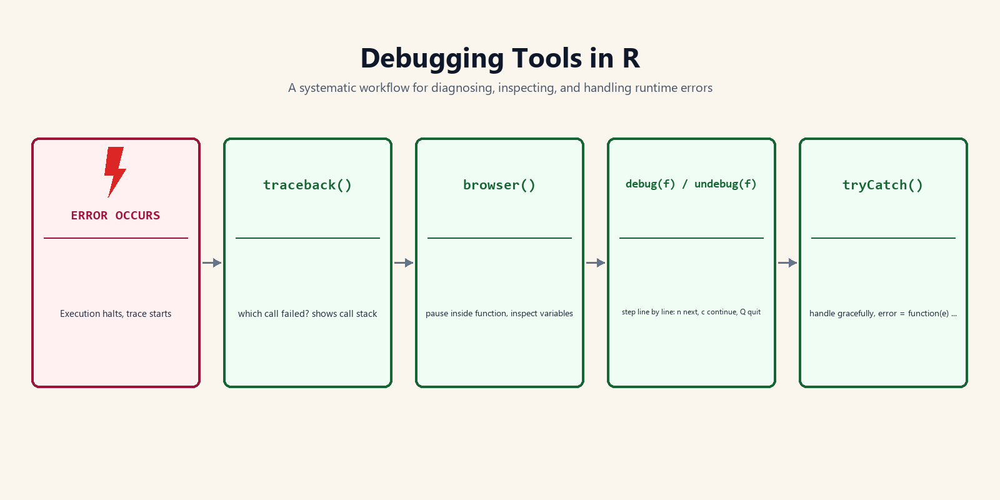
When a function throws an error, R's debugging tools let you:
R ships five built-in debugging facilities, each suited to a different stage:
traceback(): a post-mortem tool. Run it after an error to print the call stack that led to the failure — read it bottom-to-top to find where the error originated.debug(fn): flags a function so that every future call enters step-through (interactive) mode, executing one line at a time. Undo with undebug(fn).browser(): a breakpoint you insert inside the code. Execution pauses exactly there and drops into an interactive prompt where you can inspect or change variables.trace(): injects code (often browser()) into a function without editing its source — handy for functions in packages you cannot modify. Remove with untrace().options(error = ...): sets a global handler that fires on any uncaught error, e.g. options(error = recover) drops you into the frame of your choice automatically.Once paused (via debug(), browser(), or recover), use these single-letter commands:
| Tool | When it runs | What it does | Undo / pair |
|---|---|---|---|
traceback() | After an error | Prints the call stack (post-mortem) | — |
debug() | Next call onward | Steps through the whole function line-by-line | undebug() |
browser() | At the line you place it | Pauses there; opens an interactive prompt | delete the line |
trace() | On insertion point | Injects browser() without editing source | untrace() |
options(error) | On any uncaught error | Global handler, e.g. recover / dump.frames | options(error=NULL) |
Scenario: a faulty function divides by a column that may contain zero. Each tool below isolates the same bug from a different angle:
1 · Faulty function setup — define two functions where division-by-zero is the bug
f <- function(x) g(x)
g <- function(x) x / (x - 5) # error path when x == 5
f(5) # produces Inf / NaN2 · traceback() and debug() — post-mortem call stack, then step-through with debug()
# 1. traceback() — post-mortem: which calls led here?
traceback()
# 2: g(x) at #1
# 1: f(5)
# 2. debug() — step through g() on its next call
debug(g)
f(5) # enters g(); type n, n, ... ; inspect with: x
undebug(g) # stop debugging g()3 · browser(), trace(), options(error) — hard breakpoint, non-invasive inject, global error handler
# 3. browser() — hard breakpoint inside the function
g <- function(x) { browser(); x / (x - 5) }
f(5) # pauses; at Browse> prompt try: x ; x - 5
# 4. trace() — inject browser() WITHOUT editing g()'s source
trace(g, browser)
f(5) # pauses on entry to g()
untrace(g)
# 5. options(error = recover) — auto-debug on ANY error
options(error = recover)
sqrt("a") # error -> menu of frames to inspect
options(error = NULL) # restore defaultPick by need:
traceback() first — locates the failing call in the post-mortem stack.browser() (or trace() for package code) — drop a breakpoint to pause and inspect variables.debug() — walk the whole function line-by-line.options(error = recover) — auto-catches intermittent errors and drops you into the frame automatically.Differentiate between if, if-else, ifelse() and switch() in R. Explain each with a worked example.
| Parameter | if | if-else | ifelse() | switch() |
|---|---|---|---|---|
| Construct | statement (one branch) | statement (two branches) | vectorised function | multi-way selector function |
| Condition | single scalar logical | single scalar logical | a whole logical vector | one value matched to named cases |
| Vectorised? | No — uses only first element, warns | No | Yes — element-wise over the vector | No — single scalar in |
| Returns | invisible value of the run block | value of the chosen block | vector same length as the test | value of the matched case (or default) |
| Use it when… | act only if a condition is true | pick between two actions | recode / label an entire column | choose among many labelled options (menu) |
| Example | if(x>0) print("pos") | if(x>0) "pos" else "neg" | ifelse(v>0,"P","N") | switch(g,A="Excellent",B="Good") |
1 · if and if-else — scalar-only single-branch and two-branch statements
# --- 1. if : single condition, scalar only ---
marks <- 72
if (marks >= 40) print("Pass") # "Pass"
# --- 2. if-else : choose between two blocks ---
if (marks >= 40) {
result <- "Pass"
} else {
result <- "Fail"
}
print(result) # "Pass"2 · ifelse() vectorised — applies condition element-wise over a whole vector
# --- 3. ifelse() : VECTORISED over a whole column ---
scores <- c(72, 35, 50, 28)
ifelse(scores >= 40, "Pass", "Fail")
# c("Pass","Fail","Pass","Fail") -- one result per element3 · switch() — multi-way label selector with named cases and default fallback
# --- 4. switch() : multi-way selection on a label ---
grade <- "B"
switch(grade,
A = "Excellent",
B = "Good",
C = "Average",
"Invalid grade") # default (no name) = fallback
# "Good"if / if-else — control-flow statements; condition must be a single scalar. A vector condition only tests element 1 and warns.ifelse(test, yes, no) — a vectorised function; returns a vector the same length as test. The go-to for recoding a data-frame column.switch(EXPR, case1=, case2=, default) — multi-way branch on a label; the unnamed last argument is the default fallback.if/else; column-wise recode → ifelse(); many labelled options → switch() (cleaner than nested if-else).How many types of loops does R support? Explain for, while, and repeat loops with a program. Write a for loop to print the cubes of 1 to 7.
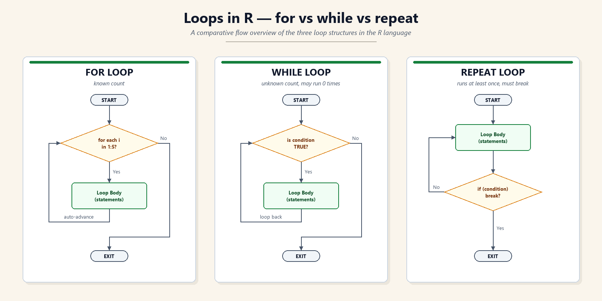
R has three loop constructs:
for — iterate over a known sequence; auto-advances through each element.while — iterate while a condition is true; checks before each iteration (may run zero times).repeat — infinite loop that must be exited with an explicit break; body always runs at least once.break (exit immediately) and next (skip to next iteration).| Feature | for | while | repeat |
|---|---|---|---|
| Syntax | for(var in seq){ … } | while(cond){ … } | repeat{ …; if(cond) break } |
| When to use | Sequence is known in advance (index, vector, list) | Condition checked before each iteration; count unknown | Loop body must run at least once; exit is deep inside |
| Exit mechanism | Sequence exhausted, or break | Condition becomes FALSE, or break | Only via explicit break |
| Infinite-loop risk | Low — bounded by sequence | Medium — if condition never changes | High — always infinite without break |
| Typical example | Iterate over rows of a data.frame | Read until a sentinel value | Menu-driven / retry logic |
1 · for loop — iterate over known sequence 1:7, print cubes with output
# for loop: print cubes of 1 to 7
for (i in 1:7) {
cat(i, "cubed =", i^3, "\n")
}
# 1 cubed = 1 … 7 cubed = 3432 · while loop — condition checked before each iteration; manual increment required
# ── while loop: same task ─────────────────────────────────────
i <- 1
while (i <= 7) {
cat(i, "cubed =", i^3, "\n")
i <- i + 1 # increment manually — or loop never ends
}3 · repeat loop — body runs first; must use explicit break to exit
# ── repeat loop: same task ────────────────────────────────────
i <- 1
repeat {
cat(i, "cubed =", i^3, "\n")
i <- i + 1
if (i > 7) break # must break explicitly
}break — exits the innermost enclosing loop immediately; execution continues after the loop body.next — skips the rest of the current iteration and jumps to the next cycle; equivalent to continue in Python/C.# next example: skip even numbers, print odd cubes only
for (i in 1:7) {
if (i %% 2 == 0) next # skip 2, 4, 6
cat(i, "cubed =", i^3, "\n")
}for (sequence-driven) · while (condition-first) · repeat (break-only exit)Write a script in R using functions, conditional statements, and loops to calculate and classify student grades.
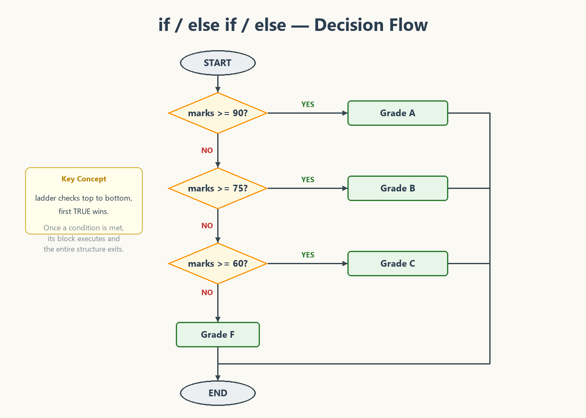
= 90 Grade A, else marks >= 75 Grade B, else marks >= 60 Grade C, else Grade F; the ladder checks top to bottom and the first TRUE wins" loading="lazy" style="width:100%;max-width:760px;height:auto;border-radius:5px;display:block;margin:0 auto;">name and a marks vector (or multiple subject columns).calc_grade(avg) function that uses an if / else if / else ladder to return a letter grade.for loop; compute average inside the loop and call the function.cat() for formatted, readable console output.1 · Data — data frame of 5 students with marks in 3 subjects
# 1. Data: 5 students × 3 subjects
students <- data.frame(
name = c("Ankit","Bina","Chetan","Disha","Eshan"),
math = c(88, 45, 72, 55, 91),
sci = c(76, 38, 68, 60, 89),
eng = c(82, 50, 74, 58, 93)
)2 · Function — calc_grade(avg) uses if/else-if ladder to return A–F letter grade
# 2. Function: classify average marks into a letter grade
calc_grade <- function(avg) {
if (avg >= 90) {
return("A")
} else if (avg >= 75) {
return("B")
} else if (avg >= 60) {
return("C")
} else if (avg >= 45) {
return("D")
} else {
return("F")
}
}3 · Loop + output — iterate over rows, compute average, print formatted table row
# 3. Loop: compute average, classify, print
for (i in 1:nrow(students)) {
avg <- mean(c(students$math[i], students$sci[i],
students$eng[i]))
grade <- calc_grade(avg)
cat(sprintf("%-9s %5.1f %s\n",
students$name[i], avg, grade))
}data.frame(...) — creates a tabular structure; each row is one student, each column one subject; stringsAsFactors = FALSE keeps names as plain character strings.calc_grade(avg) — a user-defined function; the if / else if ladder checks the grade boundaries in descending order — highest first, so the first TRUE branch fires and return() exits immediately.for (i in 1:nrow(students)) — iterates index i from 1 to the number of rows; nrow() makes the loop size-independent.mean(c(...)) — combines the three subject scores into a vector and computes their arithmetic mean in one call.cat(sprintf(...)) — sprintf() formats the output string with fixed-width fields (%-9s = left-aligned name, %5.1f = float to 1 decimal); cat() prints without extra newlines.Ankit 82.0 B
Bina 44.3 F
Chetan 71.3 C
Disha 57.7 D
Eshan 91.0 Afor (i in 1:nrow(...)) with i <- 1; while (i <= nrow(students)) { ...; i <- i + 1 }; identical logic, different loop construct.ifelse() version — avg_all <- rowMeans(students[,2:4]) then nested ifelse(avg_all >= 90, "A", ifelse(avg_all >= 75, "B", ...)); no explicit loop — leverages R's vectorisation.students$result <- ifelse(avg_all >= 45, "Pass", "Fail").| Grade | Condition (avg) | Meaning | Ladder position |
|---|---|---|---|
| A | avg ≥ 90 | Outstanding | checked 1st |
| B | 75 ≤ avg < 90 | Very good | checked 2nd |
| C | 60 ≤ avg < 75 | Good | checked 3rd |
| D | 45 ≤ avg < 60 | Pass | checked 4th |
| F | avg < 45 | Fail | else branch |
return() inside the function — R does return the last evaluated expression implicitly, but in an if/else if ladder the last expression may not be the one you want; always write return("X") explicitly in each branch to be safe.avg >= 45 before avg >= 90, every student with avg ≥ 45 gets "D" and the higher thresholds are never reached. Always order conditions from highest to lowest.= instead of <- for assignment inside a function — both work in R but <- is the conventional assignment operator; examiners expect it.students[i, ] selects all columns for row i; students[i] (no comma) selects a column by index instead.What do you mean by "vectors" and "factors" in R programming? Write R programs to explain these terms.
Vector — the most fundamental R structure:
c() for arbitrary values; seq(from, to, by) for regular sequences; rep(x, times) for repetitions.x + 2, x * y, sqrt(x) all operate element-by-element automatically.x[2]), negative index (x[-1] = drop first), logical mask (x[x > 70]).# Creation
marks <- c(82, 45, 67, 90, 55)
evens <- seq(2, 10, by=2) # 2 4 6 8 10
rep3 <- rep(0, times=5) # 0 0 0 0 0
# Vectorised ops + filter
marks + 5 # 87 50 72 95 60
marks[marks >= 60] # 82 67 90
# Coercion: higher type wins
mixed <- c(TRUE, 2L, 3.5) # numeric: 1.0 2.0 3.5Factor — R's structure for categorical data:
table(f) for counts, model.matrix() auto-expands to dummy variables.factor(x) converts a vector; optional levels= sets order; labels= renames them.factor(x, ordered = TRUE, levels = c("Low","Med","High")) encodes ranks; supports < comparisons.levels(f) returns the label vector; nlevels(f) returns the count; table(f) gives frequency per level.as.numeric() trap — as.numeric(factor(c("10","20","5"))) returns 1 2 3 (the integer codes), NOT the original numbers; use as.numeric(as.character(f)) to recover values.1 · Factor creation — factor(), inspect with levels(), nlevels(), table()
grade <- factor(c("B","A","C","A","B","F","C"))
levels(grade) # "A" "B" "C" "F"
nlevels(grade) # 4
table(grade) # A:2 B:2 C:2 F:12 · Ordered factor + labels — encode ranks with ordered=TRUE; recode integers to labels
# Ordered factor
rating <- factor(c("Med","High","Low"),
levels=c("Low","Med","High"), ordered=TRUE)
rating[1] < rating[2] # TRUE (Med < High)
# Labels: recode integers to names
factor(c(1,2,1,3), levels=1:3,
labels=c("Action","Romance","Thriller"))
# Action Romance Action Thriller3 · as.numeric trap — as.numeric(factor) returns integer codes, not original values
f <- factor(c("10","20","5"))
as.numeric(f) # 2 3 1 (codes — WRONG!)
as.numeric(as.character(f)) # 10 20 5 (correct)| Parameter | Vector | Factor |
|---|---|---|
| What it stores | Raw values (numbers, strings, logicals) | Category labels + internal integer codes |
| Data type | Homogeneous — all elements same type | Always stored as integers; displayed as labels |
| Has levels? | No | Yes — levels(f) lists unique categories |
| Arithmetic ops | Fully supported (x + 1, mean(x)) | Not meaningful; use table(f) for counts |
| Memory | Stores full values | Compact — only stores integer codes + level lookup |
| Use-case | Continuous measurements, index sequences | Categorical groups: gender, grade, region, genre |
| In models | Used as numeric predictor | Auto-expanded to dummy variables in lm() / glm() |
"Action", "Romance", "Thriller"; R codes them 1/2/3 internally and keeps a levels dictionary. A vector is just the raw IMDB ratings — any number is valid, arithmetic works directly.
Differentiate Database vs Data Warehouse. Discuss the ETL process and explain why data scientists prefer warehouses for analytics.
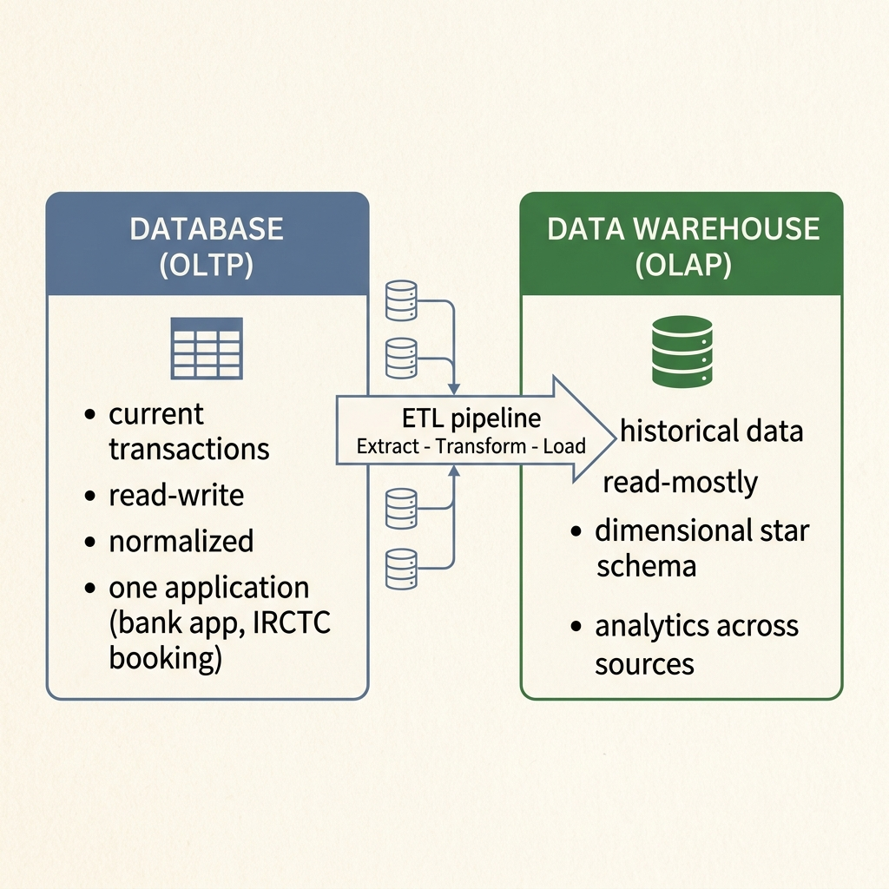
DB vs DW contrast for the differentiator:
| Aspect | Database (OLTP) | Data Warehouse (OLAP) |
|---|---|---|
| Purpose | Day-to-day transactions | Historical analysis & reporting |
| Operations | INSERT · UPDATE · DELETE | SELECT-heavy analytical queries |
| Schema | Normalised (3NF) | Denormalised (Star / Snowflake) |
| Data | Current, real-time | Historical, aggregated |
| Users | Clerks, applications | Analysts, data scientists |
| Size | MBs–GBs · ms response | GBs–PBs · sec–min response |
ETL pipeline:
Why DS prefers DW:
Differentiate between supervised and unsupervised learning with examples (classification, regression, clustering).
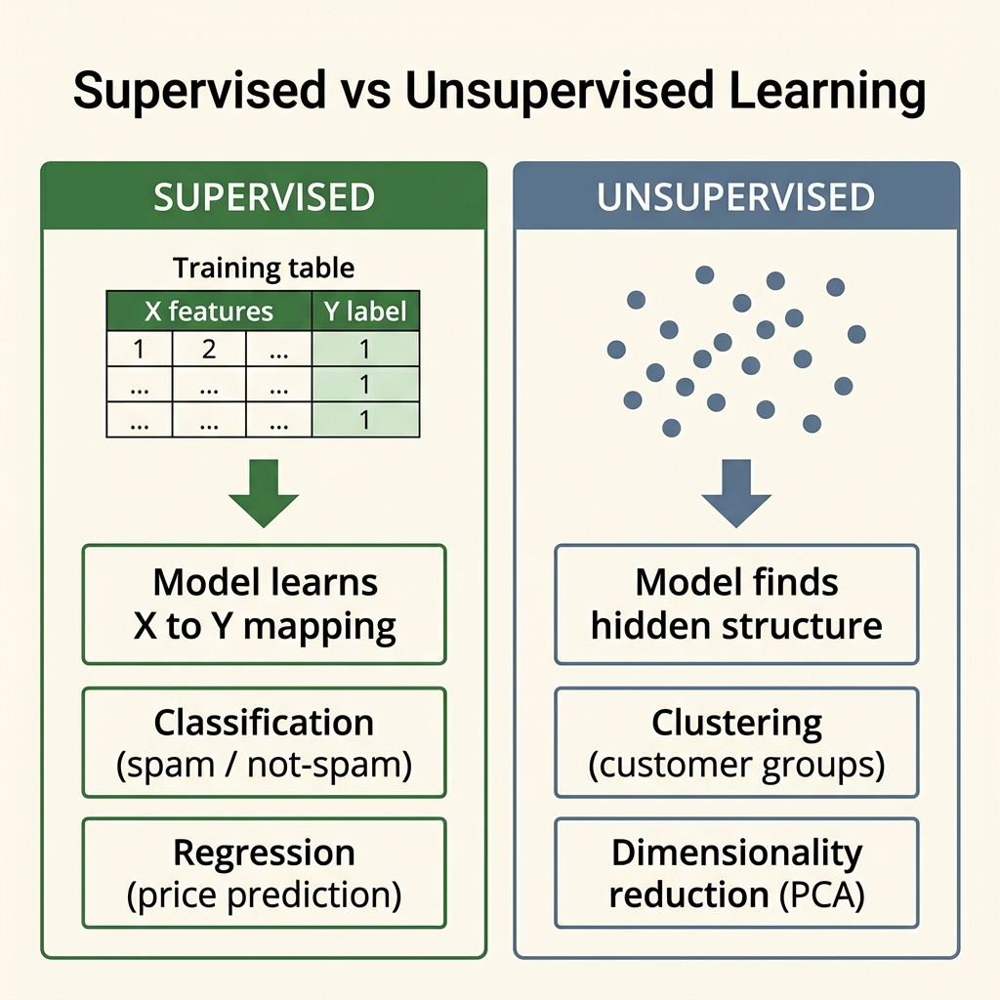
| Parameter | Supervised learning | Unsupervised learning |
|---|---|---|
| Labelled data? | Yes — each row carries a target label Y | No — only feature columns X, no target |
| Goal | Predict the label of new, unseen data | Find natural groups / structure within existing data |
| Two sub-types | Classification (categorical Y) & Regression (numeric Y) | Clustering (group rows) & association / dimensionality reduction |
| Typical algorithms | Decision tree, kNN, logistic regression, linear regression, SVM | k-means, hierarchical clustering, PCA, Apriori |
| Feedback / error | Error measurable — compare prediction vs true label (accuracy, RMSE) | No ground truth — judged by internal metrics (within-cluster SS, silhouette) |
| R example | lm() — fit on labelled data (base R) | kmeans() — discover groups (base R) |
| Example | Spam / not-spam (classification); house-price prediction (regression) | Customer segmentation into k buyer groups (clustering) |
# SUPERVISED · regression — learn from labelled (x -> y)
fit <- lm(dist ~ speed, data = cars) # label = dist (known)
predict(fit, data.frame(speed = 25)) # predict on unseen input
# UNSUPERVISED · clustering — NO label given
km <- kmeans(iris[, 1:4], centers = 3) # finds 3 groups by itself
table(km$cluster, iris$Species) # compare groups AFTER, just to inspectlm() fits supervised models on a labelled target; kmeans() clusters unlabelled rows — both base R, no package needed.Define Data Science. Explain its key components / pillars and give real-world applications.
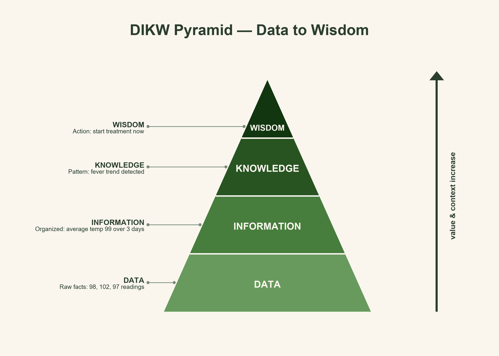
| Domain | Application | What the data does |
|---|---|---|
| Finance | Fraud detection, credit scoring | flags anomalous transactions in real time |
| Healthcare | Disease prediction, diagnostics | models risk from patient history & scans |
| Retail / E-commerce | Recommendation engines | predicts the next likely purchase |
| Transport | Route & demand forecasting | powers surge pricing & ETAs (Uber, Ola) |
| Social / Web | Sentiment analysis, ad targeting | mines text & clicks for engagement |
# A one-line data-science workflow in R: data -> insight
data(mtcars)
summary(mtcars$mpg) # describe (statistics pillar)
model <- lm(mpg ~ wt, data = mtcars) # model the relationship
coef(model) # insight: mpg falls as weight rises
# (Intercept) 37.29 wt -5.34 -> each +1000 lb costs ~5.3 mpgConclusion:
summary(), lm() take you from raw data to a stated insight.Fit a Binomial distribution to the following data and find expected frequencies. Also explain the Binomial distribution, its assumptions, and mean/variance formulas.
| x | 0 | 1 | 2 | 3 | 4 | 5 |
| f | 2 | 16 | 28 | 12 | 9 | 3 |
The Binomial distribution models the number of successes in n independent, identical Bernoulli trials each with success probability p.
Step 1 — Compute total frequency N and weighted sum Σfx.
Step 2 — Estimate p̂ by method of moments.
Step 3 — Compute expected frequencies.
Step 4 — Comparison table (observed vs fitted).
| x | Observed f | C(5,x) · p̂x · q̂5−x | Expected E(x) = 70 · P |
|---|---|---|---|
| 0 | 2 | 0.04839 | 3.39 |
| 1 | 16 | 0.20147 | 14.10 |
| 2 | 28 | 0.33537 | 23.48 |
| 3 | 12 | 0.27922 | 19.54 |
| 4 | 9 | 0.11624 | 8.14 |
| 5 | 3 | 0.01935 | 1.35 |
| Total | 70 | 1.00004 | 70.00 |
x <- 0:5; f <- c(2, 16, 28, 12, 9, 3)
N <- sum(f) # 70
p_hat <- sum(x*f) / (N * 5) # 0.4543 (= x_bar / n)
E <- N * dbinom(x, size=5, prob=p_hat)
round(E, 2) # 3.39 14.10 23.48 19.54 8.14 1.35
sum(E) # 70dbinom(x, size=n, prob=p_hat) — not dpois. Binomial needs both size and prob; Poisson needs only lambda.Write the formulas of mean and variance for Binomial, Poisson, Normal, Uniform, and Exponential distributions. Explain when each distribution applies with one real example.
| Distribution | PMF / PDF | Mean | Variance | R functions | Real example (Indian context) |
|---|---|---|---|---|---|
| Binomial B(n, p) | C(n,x) · px · (1−p)n−x | np | npq | dbinom pbinom rbinom |
Number of students passing in a class of 50 (n=50, p=0.6) |
| Poisson P(λ) | e−λ · λx / x! | λ | λ | dpois ppois rpois |
OPD arrivals per hour at a government hospital (λ = 4 patients/hr) |
| Normal N(μ, σ²) | (1/σ√2π) · e−(x−μ)²/2σ² | μ | σ² | dnorm pnorm rnorm |
Heights of BCA students (μ = 168 cm, σ = 7 cm) |
| Uniform U(a, b) | 1 / (b − a) , a ≤ x ≤ b | (a + b) / 2 | (b − a)² / 12 | dunif punif runif |
Bus arrival time: equally likely in any minute of a 20-min window |
| Exponential Exp(λ) | λ · e−λx , x ≥ 0 | 1 / λ | 1 / λ² | dexp pexp rexp |
Time between two successive wickets in a cricket session |
# d = density, p = CDF, q = quantile, r = random
dbinom(3, size=5, prob=0.4) # P(X=3) for Binomial(5,0.4)
dpois(2, lambda=1.43) # P(X=2) for Poisson(1.43)
pnorm(1.96) # P(Z<=1.96) = 0.975
qnorm(0.975) # 1.96 (inverse)
dunif(0.5, min=0, max=1) # PDF of Uniform(0,1) at 0.5 = 1
dexp(1, rate=2) # PDF of Exp(lambda=2) at x=1Explain how to create a matrix in R. Demonstrate element-wise multiplication, matrix multiplication (%*%), and combining matrices with cbind()/rbind().
matrix(data, nrow, ncol, byrow). By default R fills column-wise (byrow = FALSE); set byrow = TRUE to fill row-wise.dimnames (a list of row/col names) for labelled axes, or dim(x) <- c(r, c) to reshape an existing vector into a matrix.A * B — element-wise (Hadamard) product: same-shape matrices, each cell A[i,j]×B[i,j].A %*% B — true matrix product: inner dimensions must match (cols of A = rows of B); result is rows(A) × cols(B).1 · Matrix creation + element-wise product — matrix(..., byrow=TRUE) then A * B (Hadamard product)
# --- Create matrices (fill row-wise) ---
A <- matrix(1:4, nrow = 2, byrow = TRUE) # [[1,2],[3,4]]
B <- matrix(c(5,6,7,8), nrow = 2, byrow = TRUE) # [[5,6],[7,8]]
# --- Element-wise product A * B ---
A * B
# [,1] [,2]
# [1,] 5 12 # 1*5, 2*6
# [2,] 21 32 # 3*7, 4*82 · Matrix product + combine — A %*% B (dot product), then cbind() / rbind()
# --- Matrix product A %*% B ---
A %*% B
# [,1] [,2]
# [1,] 19 22 # 1*5+2*7, 1*6+2*8
# [2,] 43 50 # 3*5+4*7, 3*6+4*8
# --- Combine matrices ---
cbind(A, B) # 2x4 -> columns of B appended to A
rbind(A, B) # 4x2 -> rows of B stacked below A
dim(cbind(A, B)) # 2 4
dim(rbind(A, B)) # 4 2A=[[1,2],[3,4]], B=[[5,6],[7,8]]: element-wise top-left is 1×5 = 5, but matrix-product top-left is 1×5 + 2×7 = 19. Writing * where the question wants the dot-product is the single most common matrix error.
* (cell-by-cell), %*% (dot-product), and cbind/rbind (grow width vs height)| Operation | Syntax | Requirement | Result shape |
|---|---|---|---|
| Element-wise product | A * B | identical dimensions | same as A (and B) |
| Matrix product | A %*% B | cols(A) = rows(B) | rows(A) × cols(B) |
| Column-bind | cbind(A, B) | same row count | columns added (wider) |
| Row-bind | rbind(A, B) | same column count | rows stacked (taller) |
matrix(data, nrow, ncol, byrow) — fills column-wise unless byrow=TRUE; atomic, single type.A * B — element-wise, needs identical dimensions; cell A[i,j]×B[i,j].A %*% B — true matrix product, needs cols(A)=rows(B); row×column dot-products.cbind() appends columns (matching rows) → wider; rbind() stacks rows (matching columns) → taller.dim(), nrow(), ncol(), t() (transpose); never confuse * with %*% in the exam.Write short notes on: lapply() and sapply() functions in R.
lapply(X, FN) applies function FN to every element of a list or vector X.for loop; runs in C internally, so shorter and faster.sapply(X, FN) = simplified lapply — same call, but the result is collapsed when possible.nums <- 1:3
lapply(nums, sqrt) # list: [[1]] 1 [[2]] 1.414 [[3]] 1.732
sapply(nums, sqrt) # vector: 1.000 1.414 1.732
scores <- list(a=c(80,90), b=c(60,70,85))
sapply(scores, mean) # a=85.00 b=71.67| Parameter | lapply() | sapply() |
|---|---|---|
| Output | List, always | Vector / matrix (simplified) |
| When to pick | Results differ in length / type | Results are uniform scalars |
| Example result | [[1]] 1 [[2]] 4 [[3]] 9 | 1 4 9 |
Everything that drops free marks, consolidated. Six panels — read top to bottom in the exam corridor.
Last-hour visual sweep: scroll once, each picture re-fires the whole topic.
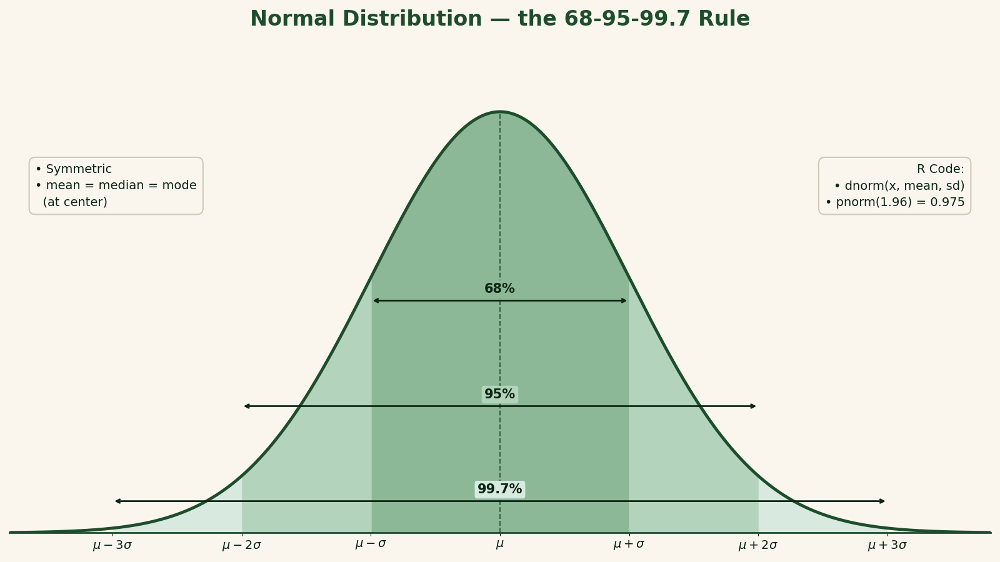
lapply returns a list, sapply simplifies to vector/matrix.cor(x, y); test with cor.test(x, y) — Pearson's r in [−1, 1].sqrt(16)=4 · abs(-5)=5 · round(3.567, 2)=3.57 (also log, exp, ceiling, floor).class()/typeof().install.packages("ggplot2") then library(ggplot2); CRAN = official package repository (18,000+).switch(day, "Mon"="Work", "Sun"="Rest").for (i in 1:5) { print(i^2) }.ggplot(df, aes(x, y)) + geom_point() — data + aes + geom layers.lm(y ~ x)); correlation only measures strength of linear relation.t.test()); small p < 0.05 → reject H₀.c() vs list()).table(x); binned: table(cut(x, breaks)).as.numeric("3.14"), as.character(42), as.integer(3.9)=3 — failed coercion → NA with warning.if / else if / else, ifelse() (vectorised), switch(), loops with break / next.+ - * / %% %/% ^ · relational == != < > · logical & | ! · assignment <-.mean(c(2,4,6))=4 · paste("Data","Science") → "Data Science".dnorm/pnorm.i <- 1; repeat { print(i); i <- i+1; if (i > 5) break } — exit-controlled, needs break.matrix(1:6, nrow=2, ncol=3, byrow=FALSE) — fills column-first by default.hist(x).df[, 2] or df$colname; bind columns with cbind(df, new).Every distribution ships four sibling functions: {prefix}{suffix}. Prefix picks what, suffix picks which.
| Prefix | Returns | Meaning | Example (Normal) |
|---|---|---|---|
d | Density (PDF/PMF) | height of curve at x | dnorm(0) → 0.3989 |
p | Cumulative (CDF) | area P(X ≤ x) | pnorm(1.96) → 0.975 |
q | Quantile (inverse CDF) | x where P(X ≤ x)=p | qnorm(0.975) → 1.96 |
r | Random sample | n random draws | rnorm(5, 50, 10) |
Recall: density · probability · quantile · random — alphabetical d·p·q·r. Suffixes: norm · binom · pois · unif · exp.
If a Part-A asks "mean/variance of Binomial(n,p)" — answer from memory, no derivation needed.
| Distribution | Mean | Variance | R suffix |
|---|---|---|---|
| Normal(μ, σ²) | μ | σ² | norm |
| Binomial(n, p) | np | np(1−p) | binom |
| Poisson(λ) | λ | λ | pois |
| Uniform(a, b) | (a+b)/2 | (b−a)²/12 | unif |
| Exponential(λ) | 1/λ | 1/λ² | exp |
| Chi-square(k) | k | 2k | chisq |
One line to remember: S3 = informal · S4 = formal · R5 = mutable.
class(x)<-"X"setClass()new() · copy-on-modify
setRefClass()Memorise the order; works for z, t, χ², F.
t.test(x, mu=50) covers steps 3–4lapply vs sapply appears every year: same input, list vs vector output.
| Function | Input | Output | Behaviour |
|---|---|---|---|
lapply(X,FN) | list / vector | list (always) | element-wise, structure preserved |
sapply(X,FN) | list / vector | vector (simplified) | cleaner lapply when output uniform |
Recall: lapply = List out, always · sapply = Simplified vector out.
The lines worth writing verbatim — structures, stats, OOP, distributions.
1 · Core data structures — vector, matrix, data frame, list access patterns
# 1 · vector + named access
v <- c(a=1, b=2, c=3); v["b"] # 2
# 2 · matrix (fill by column) + transpose
m <- matrix(1:6, nrow=2); t(m)
# 3 · data frame + filter rows
df <- data.frame(name=c("A","B"), marks=c(90,72))
df[df$marks > 80, ] # rows with marks > 80
# 4 · list — heterogeneous, $ / [[ ]] access
L <- list(id=1, scores=c(8,9)); L$scores2 · Apply family + stats — sapply/lapply, central tendency, frequency table, t-test
# 5 · sapply vs lapply (same input)
sapply(1:3, sqrt) # vector 1.00 1.41 1.73
lapply(1:3, sqrt) # list of 3
# 6 · central tendency + spread
mean(x); median(x); var(x); sd(x)
# 7 · frequency table of a factor
table(factor(c("F","M","F"))) # F:2 M:1
# 8 · one-sample t-test (hypothesis testing)
t.test(scores, mu = 70) # reports t, df, p-value3 · OOP + distributions — S4 class definition and Normal distribution four-face functions
# 9 · S4 class with typed slot
setClass("Student", representation(name="character", marks="numeric"))
# 10 · distribution four-faces (Normal)
dnorm(0); pnorm(1.96); qnorm(0.975); rnorm(5, 50, 10)